Portraits de courage, entre Histoire et Vérité. De Jean Moulin et du CNR au réseau Alliance, de Joséphine Baker à Missak & Mélinée Manouchian, de Cécile Rol-Tanguy aux frères Jacob de Coray : le live d'Ymir & Lalie, mot pour mot et vérifié.
« Au moment de mourir, je proclame que je n'ai aucune haine contre le peuple allemand et contre qui que ce soit. » — Missak Manouchian, 21 février 1944
La Résistance n'est pas un bloc : c'est une mosaïque de courages.
Ce dossier reprend mot pour mot le live d'Ymir & Lalie consacré aux Résistants : des figures nationales aux anonymes des stèles, du renseignement à l'engagement artistique. On y rend hommage, on y vérifie les faits, et on y rappelle pourquoi rester debout — contre le mensonge, contre l'indifférence, contre la désinformation — reste un exercice qui nous concerne en 2026.
Les premiers « non » à la tyrannie ; de Gaulle crée l'ordre de la Libération.
Jean Moulin unifie la Résistance ; première réunion du CNR, le 27 mai 1943.
L'Affiche Rouge ; Missak Manouchian et ses camarades fusillés au Mont-Valérien.
Le drame de Kernabat (Coray), la Libération de Scaër : la Bretagne se soulève.
Objectifs pédagogiques
Comprendre, honorer, vérifier : redonner un visage et une preuve à chaque destin.
Comprendre
L'architecture de la Résistance : l'unification par Jean Moulin et le CNR, le renseignement du réseau Alliance, l'action armée des FTP-MOI, le maquis breton.
Honorer
Des femmes et des hommes, célèbres ou anonymes, qui ont dit « non » — et qui ont prouvé que la bravoure n'avait ni genre ni frontière.
Vérifier
Distinguer la mémoire des faits, sourcer chaque récit : résister à la désinformation, c'est aussi recouper et citer. L'Histoire n'est pas une opinion.
Le live · Empire Contre-Intox
Les Résistants
« On a souvent tendance à imaginer la Résistance comme un bloc monolithique… Pourtant, quand on gratte le vernis, on découvre une mosaïque de destins. » Le déroulé complet du live, dans l'ordre, conservé intégralement.
Ouverture du live
« Aujourd'hui, on rend hommage à ceux qui ont dit non. »
01
« Résistance : Portraits de courage, entre Histoire et Vérité »
On a souvent tendance à imaginer la Résistance comme un bloc monolithique, une ligne droite tracée dans les manuels d'histoire. Pourtant, quand on gratte le vernis, on découvre une mosaïque de destins. Des hommes et des femmes ordinaires qui, un matin, ont décidé que leur conscience pesait plus lourd que leur sécurité.
Aujourd'hui, avec le collectif L'Empire Contre-Intox, on a voulu vous parler de ceux qui ont dit "non". Pas un "non" de parade, pas un "non" facile, mais un engagement qui condamnait à la clandestinité, à la traque, et parfois à l'oubli.
Je veux rendre hommage à celles, comme Cécile Rol-Tanguy, Geneviève de Gaulle-Anthonioz ou Joséphine Baker, qui ont prouvé que la bravoure n'avait pas de genre. Je veux aussi honorer les anonymes, ceux dont le nom est gravé sur les stèles de nos communes, comme à Coray, ou ceux qui, dans l'ombre des réseaux comme Kernabat ou aux côtés des frères Jacob, ont fait du sacrifice un acte quotidien. Il y a aussi ces parcours universels, comme celui de Missak Manouchian, qui rappellent que la liberté est un combat qui dépasse les frontières.
Mais la Résistance, ce n'est pas seulement un hommage au passé. C'est une boussole. Pourquoi en parler en 2026, dans un live ? Parce que la résistance — contre le mensonge, contre l'indifférence, contre la désinformation — est un exercice qui nous concerne toujours.
Ymir et moi allons vous emmener dans les coulisses de cette lutte, des réseaux de renseignement à l'engagement artistique. On ne va pas juste réciter des dates : on va essayer de ressentir, un instant, ce qu'était le poids de ces choix.
Alors, installez-vous. Aujourd'hui, on rend hommage, on vérifie les faits, et on rappelle pourquoi, hier comme aujourd'hui, rester debout est le plus beau des actes. »
La structure du live
Le déroulé : quatre blocs, un dialogue.
02
1. Introduction
(L'intro que nous avons finalisée précédemment sur la mosaïque de destins, le "non" à la tyrannie, et l'importance de la mémoire en 2026).
2. Bloc I : L'Unification (La structure)
Ymir : Présente Jean Moulin, le génie de l'unification, l'homme qui a su fédérer les courants disparates pour créer le Conseil National de la Résistance.
Transition (Lalie) : "C'est fascinant d'entendre parler de cet homme de l'ombre, Jean Moulin, qui a réussi le tour de force d'unifier la Résistance. Mais derrière cette organisation nationale, il y avait aussi des femmes dont le rôle, trop longtemps passé sous silence, a été le ciment de ces réseaux. Je pense notamment à Cécile Rol-Tanguy..."
Lalie : Récit sur Cécile Rol-Tanguy et son rôle crucial dans la coordination de la Libération de Paris.
3. Bloc II : L'Art comme arme (L'engagement)
Ymir : Présente Marie-Thérèse Auffray, l'artiste qui a fait de sa peinture et de son regard un outil de résistance et de témoignage.
Transition (Lalie) : "Tu soulignes bien, Ymir, comment l'art a servi de refuge et d'arme pour Auffray. C'est un engagement total qui me fait penser à une autre femme d'exception, Joséphine Baker, qui a utilisé sa célébrité comme un paravent pour ses activités d'espionnage."
Lalie : Récit sur Joséphine Baker, sa double vie entre les projecteurs et les services de renseignement.
4. Bloc III : L'Audace et le Terrain (Le renseignement et le local)
Ymir : Présente René Duchez (le vol des plans du Mur) et Robert Douin/André Michel (la dimension tragique et l'engagement jusqu'au bout).
Transition (Lalie) : "Bravo pour cette précision historique sur Duchez, ce genre de coup d'éclat est vital pour comprendre la logistique. Mais pour nous, en Bretagne, ce renseignement prenait une forme plus intime, plus locale, avec des réseaux comme celui de Kernabat ou l'engagement des frères Jacob."
Lalie : Focus sur les frères Jacob, le réseau Kernabat, et l'impact concret de ces actions en terre bretonne.
5. Bloc IV : L'Universel et la Dignité
Ymir : Présente Gisèle Guillemot (le courage de l'ombre et la logistique).
Transition (Lalie) : "Gisèle était une voix essentielle, tout comme ces figures qui ont prouvé que la Résistance n'avait pas de genre. Ymir, on ne peut pas parler de ces destins sans évoquer ceux qui ont porté la lutte jusqu'à son paroxysme, au péril total de leur humanité..."
Lalie : Récit sur Missak Manouchian (le symbole universel) et Geneviève de Gaulle-Anthonioz (la lutte pour la dignité après la déportation).
Gisèle Guillemot représente la "résistance de proximité". Contrairement aux chefs de réseaux qui centralisaient l'information, elle était celle qui assurait la continuité physique du réseau sur le terrain. Son courage était celui de l'endurance, celui de traverser les lignes ennemies jour après jour sans jamais faillir.
Pourquoi l'intégrer à ce live ?
Pour notre projet, Gisèle Guillemot est un excellent contrepoint aux figures masculines plus célèbres :
La place des femmes : Elle permet de rappeler que la Résistance reposait aussi sur une multitude de femmes dont le rôle logistique était crucial.
L'épreuve de la déportation : Son récit permet d'aborder avec rigueur, sans pathos inutile, la réalité du système concentrationnaire nazi, un sujet fondamental pour votre démarche de "débunkage" et de vérité historique.
Le témoignage : Son engagement d'après-guerre pour la mémoire montre que la lutte contre l'oubli et le mensonge historique est une forme de résistance qui continue bien après la Libération.
Fiche d'Identité : Gisèle Guillemot
Rubrique
Détails
Nom complet
Gisèle Guillemot
Date de naissance
22 mai 1922
Date de décès
10 février 1993
Engagement
Résistance (réseau Action)
Zone d'action
Basse-Normandie (Calvados)
Rôle
Agent de liaison, transport de documents et d'armes
Faits Marquants
Engagement précoce : Très jeune, elle refuse l'Occupation. Elle rejoint rapidement la Résistance dans le Calvados, devenant un maillon essentiel pour la circulation des informations entre les maquis et les centres urbains.
Mission de liaison : Elle parcourait des kilomètres à vélo, transportant des messages codés, des faux papiers et parfois des armes, bravant les contrôles allemands au péril de sa vie. Son apparence de jeune fille sans histoire était son meilleur camouflage.
Arrestation et Déportation : Arrêtée en 1944, elle subit la brutalité de la répression avant d'être déportée. Elle a survécu à l'horreur des camps de concentration, une épreuve qui a marqué sa vie mais n'a jamais entamé sa volonté de témoigner après la guerre.
Héroïne du quotidien : Elle incarne ces milliers de femmes dont l'action, bien que moins médiatisée que celle des chefs de réseaux, a rendu la Résistance possible. Après le conflit, elle a été une militante active pour la mémoire de la Résistance et la paix.
Bloc I · Le cerveau logistique de la Libération de Paris
Cécile Rol-Tanguy
04
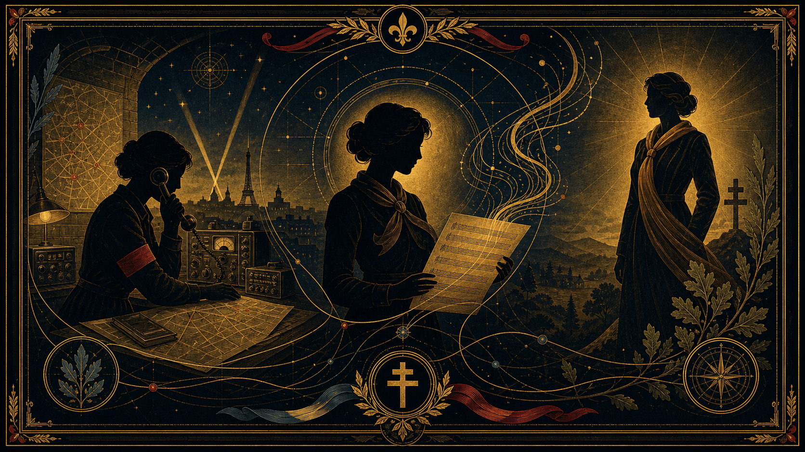
Les femmes de l'ombre — du poste de transmission à l'espionnage
Je veux commencer par un nom qui porte en lui tout le poids et toute la lumière de notre histoire : Cécile Rol-Tanguy.
Elle est née en 1920, elle nous a quittés en 2020, à 100 ans. Un siècle d'engagement. Quand on regarde sa vie, on ne voit pas seulement une femme de l'ombre, on voit une architecte de la liberté.
Cécile, c'est l'histoire d'une jeune femme qui a tout sacrifié : sa jeunesse, sa sécurité, le confort d'une vie normale, pour entrer dans la clandestinité dès 1940. Mais son rôle est crucial, et c'est ce que je veux que vous reteniez : en août 1944, dans le sous-sol de la place Denfert-Rochereau, alors que Paris est à feu et à sang, elle devient le cerveau logistique de l'insurrection. Elle recevait les rapports de toute la ville et transmettait les ordres vitaux.
C'est elle qui, avec une rigueur absolue, s'assurait que chaque instruction arrivait au bon maquisard, au bon moment. Sans sa rigueur, sans cette organisation millimétrée, la Libération de Paris aurait pu sombrer dans le chaos. Elle ne cherchait pas la gloire, elle cherchait l'efficacité. Et c'est cette efficacité, ce refus de l'à-peu-près, qui fait d'elle, encore aujourd'hui, une source d'inspiration fondamentale pour nous, dans notre combat pour la vérité."
Fiche : Cécile Rol-Tanguy (1920–2020)
1. Dates et Repères
Naissance : 10 avril 1920 (à Royan).
Décès : 8 mai 2020 (à Monteaux, à l'âge de 100 ans).
Statut : Compagnon de la Libération (distinction reçue en 2021 à titre posthume, reconnaissant son rôle majeur).
2. Sa vie : D'une jeunesse engagée à la clandestinité
Engagement précoce : Elle grandit dans un milieu ouvrier et rejoint les Jeunesses communistes dès 1936. C'est là qu'elle forge sa conscience politique et son sens de l'organisation.
La rencontre : Elle rencontre Henri Rol-Tanguy en 1937. Leur mariage et leur engagement commun deviennent le moteur de leur vie.
La vie clandestine : Dès le début de l'Occupation, le couple plonge dans la clandestinité. Cécile vit sous de multiples pseudonymes, changeant sans cesse de domicile pour échapper à la Gestapo, tout en élevant ses enfants dans des conditions de survie extrême. Elle n'était pas seulement "l'épouse du chef", elle était une cadre active de la Résistance.
3. Son rôle : La voix et les mains de l'insurrection
Le poste de commandement (1944) : En août 1944, alors que Paris s'apprête à se soulever, elle devient l'agent de liaison principale du poste de commandement des Forces Françaises de l'Intérieur (FFI), situé sous la place Denfert-Rochereau.
Le cœur de l'action : Elle est la seule à connaître l'emplacement exact du PC. Elle traite les rapports, transmet les ordres, gère les courriers, et s'assure que les messages parviennent aux chefs de barricades dans Paris.
La précision : Sans elle, l'ordre d'insurrection signé par son mari aurait pu rester lettre morte. Elle était le filtre, la sécurité et la messagère infatigable de la libération de la capitale.
Vérifier les faits
Pour celles et ceux qui veulent vérifier ces faits, je me suis appuyée sur les archives du Musée de la Libération de Paris et sur les entretiens qu'elle a laissés à l'INA. C'est une documentation accessible, passionnante, qui prouve que l'histoire, quand elle est sourcée, est bien plus puissante que n'importe quel récit inventé."
Transition vers Jean Moulin
Cécile Rol-Tanguy tenait la ligne de front depuis son poste de transmission, assurant la logistique vitale de l'insurrection. Mais pour que cette insurrection soit possible, il fallait aussi une vision globale, une stratégie pour unifier toutes les forces éparpillées en France.
C'est là qu'interviennent des figures dont le rôle a été de bâtir cette ossature de la résistance. Ymir, si tu veux nous éclairer sur cet aspect crucial : comment Jean Moulin et son équipe ont-ils réussi à transformer ces volontés isolées en une véritable armée de l'ombre ?
Bloc II · L'espionne sous les projecteurs
Joséphine Baker
05
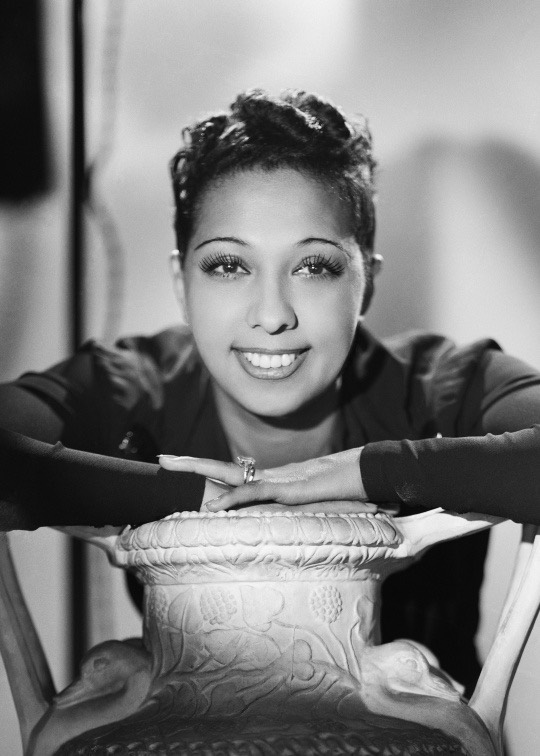
Joséphine Baker (1906-1975)Studio Harcourt, 1940 — domaine public
Transition (Lalie)
Tu soulignes bien, Ymir, comment l'art a servi de refuge et d'arme pour Auffray. C'est un engagement total qui me fait penser à une autre femme d'exception, Joséphine Baker, qui a utilisé sa célébrité comme un paravent pour ses activités d'espionnage.
Joséphine Baker – L'espionne sous les projecteurs
Au micro
"Imaginez : les années 40. Vous êtes la plus grande star du monde, les projecteurs vous suivent partout, les foules vous acclament... et pourtant, vous jouez votre vie à chaque seconde.
Joséphine Baker, c'est ce paradoxe absolu. Elle n'était pas juste une artiste, c'était une espionne de génie. Elle a compris très tôt que sa célébrité était son meilleur atout. Alors que les espions classiques étaient surveillés, on ne se méfiait jamais de la 'star'. Elle a transporté des renseignements vitaux sous le nez de la Gestapo, dissimulés dans ses partitions ou dans ses robes.
Elle aurait pu rester en sécurité aux États-Unis, loin du conflit. Elle a choisi la France. Elle a mis son énergie, son argent et sa vie au service de notre liberté. Pourquoi est-ce important de le rappeler en 2026 ? Parce que Joséphine nous montre que l'image publique ne définit pas la profondeur d'une femme. Elle a prouvé que la Résistance n'avait pas d'uniforme, et surtout, qu'elle n'avait pas de limites."
1. Fiche d'identité
Nom complet : Freda Josephine McDonald (devenue Joséphine Baker par mariage).
Naissance : 3 juin 1906 (à Saint-Louis, États-Unis).
Décès : 12 avril 1975 (à Paris).
Distinctions majeures : Croix de guerre 1939-1945, Médaille de la Résistance, Chevalier de la Légion d'honneur. Entrée au Panthéon en 2021.
2. Son rôle : La diva de l'espionnage
L'entrée en résistance : Dès 1939, elle est recrutée par le contre-espionnage français (le Deuxième Bureau). Elle ne cherche pas la gloire, elle veut défendre sa patrie d'adoption, la France, qui l'a accueillie et célébrée.
Sa méthode (Le génie du camouflage) :
Les partitions : Elle écrivait des messages secrets à l'encre sympathique sur ses partitions de musique, qu'elle transportait partout en Europe.
L'accès privilégié : Grâce à sa notoriété, elle pouvait circuler librement, assister à des réceptions diplomatiques, voyager en Italie ou au Portugal. Personne ne se doutait qu'elle écoutait, observait et notait les mouvements des troupes allemandes.
L'engagement au-delà de l'espionnage : Elle met son château des Milandes à la disposition de la Résistance, servant de cache pour des agents et des matériels. Elle s'engage également dans les Forces Aériennes Françaises Libres (FAFL).
Vérifier les faits
Pour celles et ceux qui veulent creuser ce parcours incroyable, je vous renvoie aux archives des services de renseignement français (SR) consultées lors de son dossier d'entrée au Panthéon. C'est une mine d'or sur la manière dont elle a berné l'occupant pendant des années."
Bloc IV · La dignité comme ultime front
Geneviève de Gaulle-Anthonioz
06
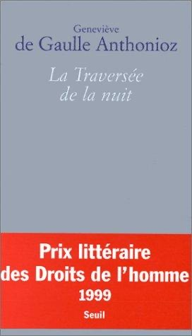
La Traversée de la nuit Geneviève de Gaulle-Anthonioz (Seuil, 1998) — couverture éditeur.
Transition (Lalie)
Gisèle était le dernier maillon d'une chaîne logistique cruciale. Mais pour que ces destins nationaux ne restent pas isolés, il faut comprendre ce qui habitait ces femmes quand tout basculait. Ymir, si tu veux nous parler de l'organisation que ces femmes ont su bâtir, je prendrai le relais pour évoquer le parcours de Geneviève de Gaulle-Anthonioz, afin d'explorer ce que signifiait 'rester soi-même' quand tout est fait pour vous briser.
Au micro
"Geneviève de Gaulle-Anthonioz, c'est l'histoire de la victoire de l'esprit sur la machine à broyer les corps. Lorsqu'elle est arrêtée en 1943, puis envoyée à Ravensbrück, elle a 23 ans. Là-bas, l'objectif n'est pas seulement de tuer, c'est de réduire l'être humain à rien.
Mais Geneviève a résisté. Comment ? Par la culture, par la solidarité, par cette exigence de dignité qu'elle n'a jamais lâchée. Elle disait souvent que la déportation lui avait appris à quel point chaque vie humaine est irremplaçable. Elle a transformé cette horreur vécue en un combat de toute une vie contre la misère, auprès des plus pauvres.
En 2026, quand on voit à quel point on cherche parfois à nous diviser ou à déshumaniser certains discours, Geneviève est notre boussole. Elle nous rappelle que le plus grand acte de résistance, c'est d'être capable de voir en l'autre un semblable, quelles que soient les circonstances."
1. Fiche d'identité
Naissance : 25 octobre 1920 (à Saint-Jean-de-Valériscle).
Décès : 14 février 2002 (à Paris).
Parcours : Nièce du Général de Gaulle, engagée très tôt dans la Résistance. Arrêtée en 1943, déportée au camp de Ravensbrück.
Distinctions : Grand-croix de la Légion d'honneur, Médaille de la Résistance.
2. Son rôle : La dignité comme ultime front
Résistance spirituelle : À Ravensbrück, dans l'enfer concentrationnaire, elle refuse de céder à la déshumanisation. Elle organise avec d'autres déportées des cercles de lecture, des chants, tout ce qui permet de maintenir l'esprit vivant.
Le courage de témoigner : Après la guerre, elle ne s'est pas contentée de survivre. Elle est devenue la voix de ceux qui ne sont pas revenus, témoignant au procès de Nuremberg et consacrant sa vie à la lutte contre la grande pauvreté avec l'association ATD Quart Monde.
Le lien avec notre combat : Elle a prouvé que la dignité humaine est le socle de toute liberté. Elle a refusé que la souffrance soit une excuse pour oublier l'autre.
Pour aller plus loin
"Pour comprendre la force de son engagement, je vous conseille vivement de lire ses écrits, notamment 'La Traversée de la nuit'. C'est un document indispensable. Vous y verrez que la vérité de la Résistance n'est pas qu'une question de chiffres ou de batailles, c'est une question de conscience humaine."
On entend souvent dire qu'il n'était pas 'français'. Et c'est un fait : Missak Manouchian était un apatride, un immigré arménien qui avait fui le génocide. Mais je veux vous poser une question : qu'est-ce qui définit le plus la citoyenneté ? Est-ce un tampon sur un passeport, ou est-ce le combat que l'on mène pour les valeurs d'un pays ?
Missak n'est pas devenu résistant par naissance, il l'est devenu par choix. Il est arrivé en France dans les années 20, il a appris notre langue, il a lu nos poètes, il a épousé une Française, Mélinée. Il a aimé la France pour ce qu'elle promettait : la liberté, l'égalité, la fraternité.
Quand l'Occupation a commencé, il n'avait aucune obligation légale de se battre. Il aurait pu rester dans l'ombre. Pourtant, il a pris la tête des FTP-MOI. Il a mené des actions concrètes, courageuses, risquées, contre un occupant qui voulait détruire tout ce qu'il aimait dans ce pays.
Alors, quand je vois cette Affiche Rouge, je ne vois pas un 'étranger' qui s'immisce dans une guerre qui n'est pas la sienne. Je vois un homme qui a fait de la France sa patrie de cœur, et qui a payé ce choix du prix le plus fort. Il nous rappelle, à nous en 2026, que la France n'est pas une terre fermée, mais une idée, une promesse, que l'on peut défendre avec plus de ferveur que ceux qui l'ont reçue en héritage sans jamais la questionner."
1. Fiche d'identité
Missak Manouchian : Né en 1906, rescapé du génocide arménien, arrivé en France en 1925. Poète et militant.
Le groupe : Membre des FTP-MOI (Francs-Tireurs et Partisans - Main-d'œuvre Immigrée).
Le symbole : L'Affiche Rouge, placardée par les nazis en février 1944 pour discréditer la Résistance.
2. Ton récit
"Si l'on veut parler de la Résistance sans artifice, il faut parler de Missak Manouchian.
Missak n'était pas un 'Français de souche'. C'était un rescapé du génocide arménien. Il avait choisi la France non pas par héritage, mais par adhésion totale à ses idéaux. C'était un poète, un homme de lettres, qui a dû troquer son stylo pour le combat clandestin au sein des FTP-MOI.
Mais ce que l'occupant a fait de lui est encore plus marquant. En février 1944, les nazis ont placardé partout dans Paris cette tristement célèbre Affiche Rouge. Leur but ? Utiliser les visages de ces résistants immigrés pour terroriser la population et crier au 'complot de l'étranger'. Ils voulaient nous dire : 'Regardez, ce ne sont pas de vrais Français, ce sont des terroristes venus d'ailleurs'.
C'est là que l'Histoire a pris une tournure inattendue. En voulant les stigmatiser, ils ont, en réalité, gravé leurs visages dans notre conscience nationale. Cette affiche est devenue l'emblème même de notre liberté. Missak Manouchian, fusillé au Mont-Valérien, n'est pas mort en étranger : il est mort pour la France, avec une dignité qui, 80 ans plus tard, continue de nous faire face."
Il faut oublier l'image romantique du résistant solitaire. Ce qu'ils ont fait, c'était une guérilla urbaine organisée, chirurgicale et extrêmement risquée.
Voici les points clés à mettre en avant pour montrer leur efficacité sur le terrain :
1. Le passage à l'action armée (1943)
Contrairement à d'autres réseaux qui faisaient surtout du renseignement ou du sabotage de voies ferrées, le groupe Manouchian s'est spécialisé dans les attaques directes contre l'occupant en plein cœur de Paris.
Les sabotages : Ils ont mené des dizaines d'opérations contre des convois allemands, des dépôts de matériel et des installations militaires.
La spécificité : Ils agissaient par petits groupes très mobiles, ce qui rendait leur traque extrêmement difficile pour la police française (les Brigades spéciales) et la Gestapo.
2. L'attentat contre le général von Ritter
C'est sans doute leur action la plus marquante. Le 28 septembre 1943, le groupe Manouchian abat le général Julius Ritter.
Pourquoi lui ? C'était l'adjoint de Fritz Sauckel, responsable du Service du Travail Obligatoire (STO) en France. Ritter était celui qui organisait la déportation massive des travailleurs français vers les usines allemandes.
L'impact : En abattant un officier de ce rang, ils ont frappé la machine de guerre nazie là où elle était la plus vulnérable : sa capacité à recruter de la main-d'œuvre forcée. C'était un coup de tonnerre dans le Paris occupé.
3. La logistique de la survie
Au-delà du combat armé, leurs actions étaient aussi logistiques :
Le camouflage : Manouchian et ses hommes vivaient dans la clandestinité totale, changeant sans cesse d'adresse, utilisant des faux papiers, cachés par des réseaux de solidarité.
La gestion des ressources : Ils devaient trouver de l'argent pour vivre, des armes pour combattre, et assurer la liaison entre les différents groupes de la MOI (Arméniens, Hongrois, Polonais, Italiens). C'était une véritable "armée des ombres" cosmopolite.
On s'imagine souvent la Résistance comme des gens qui attendent. Pour Manouchian, c'était l'inverse. Ses actions, c'était du 'commando' pur et dur. Quand ils décident d'abattre le général Ritter en 1943, ils ne font pas qu'éliminer un officier, ils stoppent net un rouage de la déportation du STO.
Imaginez la scène : en plein Paris, au milieu des patrouilles allemandes, des hommes sans grade, des immigrés qui n'avaient souvent même pas le droit de circuler librement, parviennent à frapper un haut dignitaire nazi. C'était une audace folle, une maîtrise technique parfaite. Ils ne se battaient pas avec des rêves, ils se battaient avec une précision militaire. C'est cette dimension 'technicien du sabotage' qui les rendait si terrifiants pour l'occupant."
La lettre de Missak Manouchian à Mélinée est sans doute l'un des textes les plus poignants de notre histoire. Ce n'est pas seulement un adieu, c'est une déclaration d'amour à la vie, à la liberté et à la France, écrite quelques heures avant son exécution au Mont-Valérien, le 21 février 1944.
La lettre de Missak Manouchian à Mélinée — 21 février 1944
Ma chère Mélinée, ma petite orpheline bien-aimée,
Dans quelques heures, je ne serai plus de ce monde. Nous allons être fusillés cet après-midi à 15 heures. Cela m'arrive comme un accident dans ma vie, je n'y crois pas mais pourtant je sais que je ne te verrai plus jamais.
Que puis-je t'écrire ? Tout est confus en moi et bien clair dehors.
Je m'étais engagé dans l'Armée de Libération en soldat volontaire et je meurs à deux doigts de la Victoire et du but. Bonheur à ceux qui vont nous survivre et goûter la douceur de la liberté et de la paix de demain. Je suis sûr que le peuple français et tous les combattants de la Libération sauront honorer notre mémoire dignement. Au moment de mourir, je proclame que je n'ai aucune haine contre le peuple allemand et contre qui que ce soit, chacun aura ce qu'il méritera comme châtiment et comme récompense. Le peuple allemand et tous les autres peuples vivront en paix et en fraternité après la guerre qui ne durera plus longtemps. Bonheur à tous !
J'ai un regret profond de ne t'avoir pas rendue heureuse, j'aurais bien voulu avoir un enfant de toi comme tu le voulais toujours. Je te prie donc de te marier après la guerre, sans faute, et d'avoir un enfant pour mon bonheur et, pour accomplir ma dernière volonté, marie-toi avec quelqu'un qui puisse te rendre heureuse. Tous mes biens et toutes mes affaires, je veux qu'après la guerre ils soient légués à tes parents ou à tes sœurs.
Toi, tu iras en Arménie si tu le peux après la guerre. Je meurs sans haine en moi pour le peuple allemand. Le bonheur à tous ceux qui vont nous survivre et goûter la douceur de la liberté et de la paix de demain.
Adieu ma chère, ma petite bien-aimée, ma petite orpheline. Adieu, mes amis, mes camarades, je vous pardonne à tous ceux qui m'ont fait du mal et ceux qui ont voulu me faire du mal.
Un grand baiser à toi, et à tous les tiens.
Ton Manouchian. »
Il est important de souligner :
L'absence de haine : C'est le point le plus fort. Un homme qui va être exécuté, qui a vécu le génocide arménien, refuse la haine. C'est une leçon de morale et de hauteur d'esprit qui détonne avec la violence de son engagement armé.
L'humanité absolue : Il ne parle pas en "héros de légende", il parle en homme qui regrette de ne pas avoir eu d'enfant, qui veut que sa femme soit heureuse après lui. C'est là que ton public va se connecter émotionnellement avec lui.
Le message pour 2026 : Cette lettre est un puissant antidote au cynisme. Elle montre que, même face à la mort, on peut choisir de croire en la fraternité entre les peuples.
Vérifier les faits
"Pour celles et ceux qui veulent aller au-delà des discours, je vous conseille de consulter les rapports de police de la Brigade Spéciale n°2 qui a traqué le groupe Manouchian. Ces documents, accessibles aux Archives de la Préfecture de Police de Paris, montrent précisément comment ces résistants ont été surveillés. C'est froid, c'est documenté, et c'est une preuve irréfutable de leur héroïsme."
"On ne peut pas parler de Missak sans parler de Mélinée. Ils se sont rencontrés, ils se sont aimés, et ils ont résisté ensemble. Mélinée, c'était le lien. Quand Missak était sur le front de la guérilla urbaine, Mélinée assurait la survie du groupe dans l'ombre.
Ce qui me touche le plus chez elle, c'est sa résilience après la mort de Missak. Elle a perdu l'homme de sa vie, elle a vécu traquée, mais elle n'a jamais cédé à l'amertume. Elle a passé sa vie à dire : 'Ils ne sont pas morts pour rien, ils sont morts pour une idée de la France'. Elle a été la voix de ceux qui n'en avaient plus, et sans elle, la mémoire de l'Affiche Rouge aurait sans doute été effacée par la propagande. Mélinée nous enseigne que résister, c'est aussi, après le fracas des armes, porter la vérité à bout de bras."
Mélinée Manouchian (née Soukémian) est une figure aussi indissociable de Missak que le sont leurs destins. Si elle est souvent restée dans l'ombre du "chef" des FTP-MOI, elle était une résistante active et le pilier central de sa vie.
Voici les éléments clés pour présenter Mélinée, une femme qui a survécu à l'horreur pour devenir la gardienne de la mémoire de son mari et de ses camarades.
1. Fiche d'identité
Nom : Mélinée Soukémian.
Naissance : 1913 (en Turquie).
Parcours : Orpheline du génocide arménien, elle grandit dans des orphelinats avant d'arriver en France.
Son rôle : Résistante, agent de liaison au sein des FTP-MOI. Elle a survécu à la guerre et a consacré sa vie à réhabiliter la mémoire du groupe Manouchian.
2. Une résistante de l'ombre
Mélinée n'était pas seulement "l'épouse de". Au sein des FTP-MOI, elle occupait des fonctions stratégiques :
Agent de liaison : Elle transportait des messages, des armes et des informations vitales. Dans la clandestinité, c'était le rôle le plus dangereux car c'est celui qui permettait aux réseaux de rester connectés malgré la surveillance constante.
Le soutien logistique : Elle gérait les caches, le ravitaillement et les conditions de vie précaires de ces combattants qui vivaient traqués.
3. La gardienne de la mémoire
Après l'arrestation de Missak en novembre 1943, Mélinée échappe de justesse à la Gestapo grâce à l'aide de réseaux de soutien. Elle vit dans la clandestinité jusqu'à la Libération.
À partir de 1944, elle entame un combat de plusieurs décennies :
Combattre l'oubli : Elle a lutté pour que le sacrifice des étrangers (les "métèques" selon la propagande de l'époque) soit reconnu par la France. Elle a porté la mémoire de Missak non pas comme une légende figée, mais comme un engagement politique vivant.
Le témoignage : Elle a écrit son propre récit, Manouchian, où elle livre son regard sur ces années de plomb, rétablissant la vérité sur le groupe contre les versions officielles parfois partiales.
Mélinée est l'archétype de la "fact-checkeuse" historique. Face aux mensonges de la propagande nazie (l'Affiche Rouge), elle a passé sa vie à rétablir les faits, à donner des noms, des visages, et à rappeler que la Résistance était une affaire de convictions partagées.
Le piège de la propagande
L'Affiche Rouge
09
L'Affiche Rouge – Le piège de la propagande
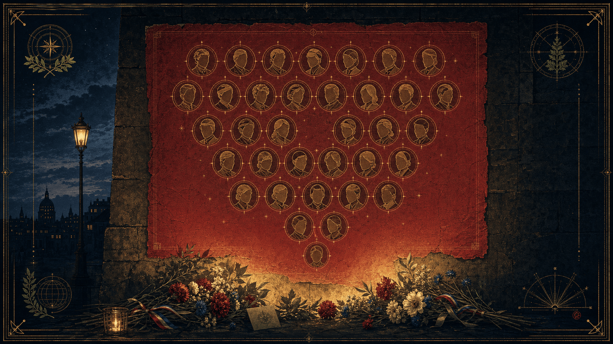
« Le peuple a commencé à fleurir l'affiche » — la honte muée en hommage
Au micro
"Avant de comprendre le sacrifice final de Manouchian, il faut que l'on parle de cette affiche. Vous l'avez sûrement déjà vue, placardée sur les murs de Paris en février 1944. C'est l'Affiche Rouge.
L'occupant nazi a eu une idée 'géniale' selon ses critères de propagande : imprimer les visages de Manouchian et de ses camarades des FTP-MOI, avec en dessous, cette mention : 'Des libérateurs ? La libération par l'armée du crime !'. Ils ont mis en évidence leurs noms à consonance étrangère, leurs traits, pour jouer sur la peur, sur le racisme, sur le rejet de 'l'autre'.
C'était une manipulation totale. Ils voulaient nous faire croire que la Résistance n'était pas une affaire de Français, mais une conspiration d'étrangers, de Juifs, de communistes, venus déstabiliser le pays.
Mais, et c'est là que leur stratégie s'effondre : ils se sont trompés d'époque et de peuple.
En voulant les stigmatiser, ils ont, en réalité, créé un immense mouvement de compassion. Les Parisiens, en voyant ces visages sur les murs, ne voyaient pas des 'criminels'. Ils voyaient des hommes et des femmes qui étaient morts pour eux. Le peuple a commencé à fleurir l'affiche. Elle est devenue un symbole d'héroïsme au lieu d'être un symbole de honte.
C'est la preuve ultime que la propagande, aussi massive soit-elle, finit toujours par se heurter à la réalité des faits quand les gens décident de regarder au-delà des étiquettes."
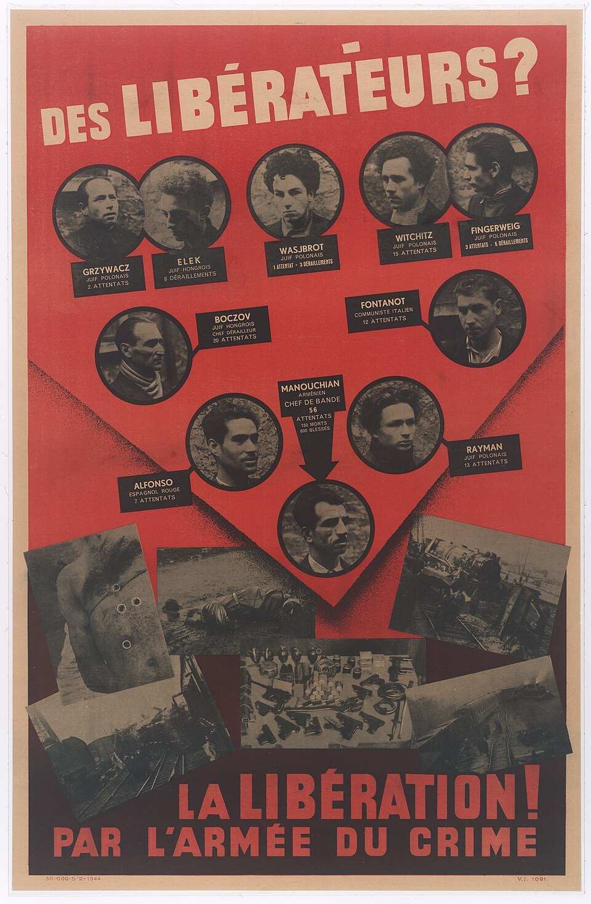
L'Affiche Rouge — placardée en février 1944Le document de propagande original (domaine public). Dix des vingt-trois condamnés y sont montrés, Manouchian au centre.
Le rebond vers Missak et Mélinée
"Cette affiche, c'est le masque que l'occupant a voulu leur coller. Mais derrière ce masque, il y avait Missak Manouchian et Mélinée. Derrière l'affiche, il y avait une histoire d'amour, de poésie et d'engagement. Et c'est cette vérité-là que je veux vous raconter maintenant..."
"On parle souvent de Missak, mais l'Affiche Rouge, c'était le visage de 23 combattants fusillés au Mont-Valérien. Des hommes qui venaient de Pologne, de Hongrie, d'Italie, d'Espagne, d'Arménie. Ils n'étaient pas 'juste' des soldats, c'étaient des ouvriers, des étudiants, des poètes, des pères de famille.
Je veux que l'on se souvienne de quelques-uns d'entre eux :
Joseph Epstein, le chef militaire, un intellectuel communiste polonais qui a coordonné l'action de ces groupes avec une efficacité redoutable.
Marcel Rajman, un jeune juif polonais d'une audace folle, responsable de plusieurs attentats majeurs contre les officiers nazis.
Thomas Elek, un étudiant hongrois qui, à 18 ans seulement, a fait le choix de rejoindre la lutte armée.
Olga Bancic, la seule femme du groupe fusillée, une roumaine qui, elle aussi, a tout sacrifié.
Ces noms, ce ne sont pas juste des lignes sur un monument. Ce sont des vies, des trajectoires brisées. Quand les nazis ont imprimé cette affiche, ils pensaient nous effrayer en montrant ces noms à consonance étrangère. Aujourd'hui, ces noms sont gravés dans notre mémoire nationale. Ils nous rappellent que la France, ce jour-là, a été sauvée par ceux qui n'étaient pas nés sur son sol, mais qui en partageaient l'âme."
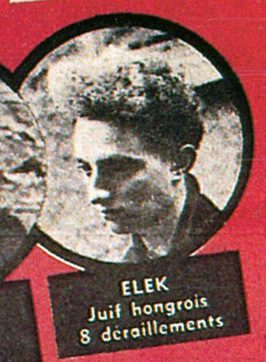
Thomas Elek (1924-1944)Extrait de l'Affiche Rouge — CC BY-SA 4.0, Wikimedia Commons
Voici des précisions sur Marcel Rajman et Olga Bancic, deux figures du groupe qui suscitent souvent beaucoup d'intérêt
1. Marcel Rajman : Le "tireur" audacieux
Pourquoi il est marquant : Il était l'un des membres les plus jeunes et les plus actifs des "détachements de choc" des FTP-MOI. Il était connu pour son sang-froid impressionnant lors des opérations.
Le détail qui "accroche" : Il était chargé de diriger des équipes pour des attentats extrêmement risqués en plein Paris, notamment contre des officiers de haut rang.
Comment en parler : "Marcel Rajman, c'est l'audace incarnée. À peine vingt ans, juif polonais, il a mené des opérations de harcèlement contre l'occupant en plein jour. Pour la Gestapo, il était devenu une obsession : ils ont déployé des moyens immenses juste pour réussir à l'intercepter."
2. Olga Bancic : La seule femme fusillée
Pourquoi elle est marquante : Elle était la seule femme du groupe à avoir été condamnée à mort et fusillée au Mont-Valérien. Elle était roumaine, juive, et communiste.
Le détail qui "accroche" : Avant d'être fusillée, elle a réussi à faire sortir clandestinement du secret de sa cellule une lettre pour sa petite fille, Dolores, qu'elle ne reverrait jamais. C'est une lettre déchirante qui humanise tout le groupe.
Comment en parler : "Olga Bancic est le cœur battant de ce groupe. Elle était chargée de la logistique, du transport des explosifs, une fonction incroyablement risquée. Mais c'est son dernier message, une lettre à sa petite fille, Dolores, qui nous rappelle l'humanité derrière le combat. Elle ne se battait pas par haine, mais par amour pour que son enfant puisse grandir dans un monde libéré."
Questions au public
Si vous vous demandez :
"Pourquoi ils étaient communistes ?"
Nous pouvons répondre: "À l'époque, les FTP-MOI étaient effectivement très largement composés de militants communistes, car le PCF était l'un des premiers partis à organiser la lutte armée clandestine dès 1941. Mais ce qui est fascinant, c'est que ces hommes et femmes ont dépassé les clivages idéologiques pour se retrouver sur un seul point : la libération de la France."
"Est-ce qu'ils étaient des terroristes ?"
Nous vous dirons "C'est exactement ce que la propagande nazie voulait que l'on pense. Pour l'occupant, oui, ils étaient des 'terroristes' car ils remettaient en cause leur pouvoir. Mais pour nous, aujourd'hui, ce sont des combattants de la liberté. La différence, c'est la légitimité de la cause. Et l'Histoire a tranché : ils sont au Panthéon."
"Chaque nom que je viens de citer, c'est une vie qui a basculé. Ce ne sont pas des statistiques, ce sont nos racines. Et c'est cette force collective qui permet de passer le relais à la suite du récit..."
1. La source "fondamentale" (Le document d'époque)
Pour le groupe Manouchian, la référence absolue qui fait autorité est :
Source : Le rapport du procès de février 1944 (tenu par la cour martiale allemande).
Pourquoi la citer : Parce que c'est une preuve directe de la manière dont les nazis ont cherché à déshumaniser le groupe.
Ce que l'on peut dire : "Si vous voulez vérifier ce que je vous dis, je vous renvoie au rapport du procès du 21 février 1944. C'est un document historique glaçant. C'est là qu'on voit noir sur blanc comment ils ont été jugés."
2. Le témoignage direct (La voix de l'intérieur)
Pour Mélinée Manouchian, il n'y a pas de meilleure source qu'elle-même.
Source : Manouchian par Mélinée Manouchian (Éditions Bourgois).
Pourquoi la citer : C'est un récit de vie. C'est le témoignage d'une femme qui était au cœur de l'organisation.
Ce que l'on peut dire : "Tout ce que je vous raconte sur le quotidien du groupe, je le tire du livre de Mélinée Manouchian elle-même. Elle a tout écrit, elle a été la mémoire vivante de Missak. C'est un témoignage irremplaçable."
3. La rigueur historique
Pour le travail sur le groupe des FTP-MOI, on peut vous citer des historiens reconnus qui ont dépouillé les archives de la Préfecture de Police.
Source : L'Affiche Rouge de Stéphane Courtois ou les travaux d'Adam Rayski.
Pourquoi les citer : Ce sont eux qui ont travaillé sur la fameuse "Brigade Spéciale n°2" qui a traqué le groupe.
Ce que l'on peut dire : "Pour la partie plus 'enquête' sur comment ils ont été traqués, je me suis basée sur les travaux de Stéphane Courtois et d'Adam Rayski. Ils ont croisé les archives de la police française de l'époque avec les dossiers de la Gestapo. C'est du factuel, du 100% sourcé."
On entend souvent une remarque : 'Beaucoup de résistants étaient communistes'. C'est un fait historique, particulièrement au sein des FTP-MOI. Mais pourquoi cet engagement massif ?
Il faut comprendre que dès 1941, le Parti communiste français a fait un choix radical : celui de la lutte armée clandestine immédiate, alors que d'autres organisations hésitaient encore sur la marche à suivre. Le PCF a su transformer sa structure militante, très habituée à la clandestinité, en une véritable armée de l'ombre.
Mais ce qui rend le PCF différent de ses homologues dans d'autres pays, c'est sa capacité à avoir fusionné la lutte des classes avec une forme de patriotisme français. Ils se sont appropriés le destin de la France, devenant ce qu'on a appelé le 'parti des fusillés'. Ce n'était pas l'importation d'une idéologie étrangère, mais une adaptation très concrète face à l'urgence de l'Occupation.
Cependant, sur le terrain — que ce soit dans les réseaux comme Kernabat ou dans les actions locales comme celles que nous étudions à Coray — l'étiquette politique s'effaçait bien souvent devant l'urgence de la survie. La Résistance, ce n'était pas un parti, c'était un front : quand vous êtes traqué par la Gestapo, ce qui compte, c'est la confiance et le courage de celui qui est à vos côtés, pas sa carte d'adhérent."
La devise du collectif
"L'Histoire n'est pas une opinion, c'est une étude des faits. Ces sources sont là pour que chacun puisse vérifier par soi-même."
"Ces paroles nous rappellent que ces hommes n'étaient pas des machines de guerre, mais des êtres de chair et d'esprit. (Pause).
Cette histoire de courage et d'engagement ne s'est pas arrêtée aux portes de Paris. Elle a résonné partout en France, dans chaque ferme, dans chaque maquis, jusque dans nos terres bretonnes. C'est d'ailleurs ce qui m'amène à vous parler du réseau Kernabat, parce que, comme pour Missak, ce sont des anonymes qui ont décidé de dire 'non'."
Bloc III · La Bretagne, le terrain, l'héritage familial
Kernabat
11
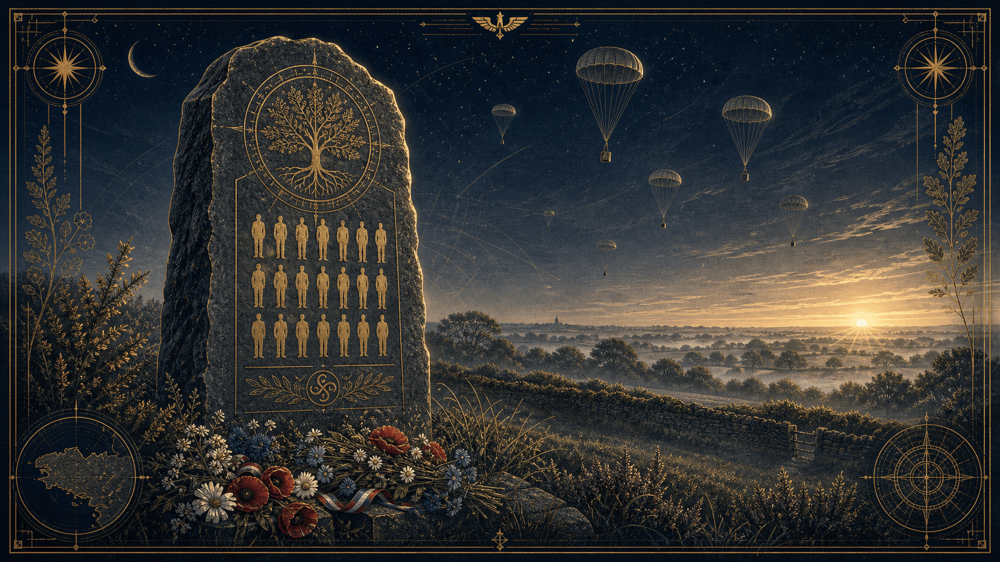
Kernabat (Scaër) — la stèle des martyrs, et le parachutage du 14-15 juillet 1944
Nous avons parlé de la grande Histoire avec Manouchian et l'Affiche Rouge, ce combat qui a marqué tout un pays. Mais cette volonté de dire 'non' ne se trouvait pas seulement dans les dossiers des tribunaux nazis à Paris ; elle a aussi battu le rappel dans nos campagnes, jusque sur nos terres bretonnes. C'est là que le réseau Kernabat prend tout son sens."
Au micro
« On vous a parlé de la Résistance comme d'une mosaïque de destins. Pour comprendre ce que cela signifie vraiment, il faut sortir des grands récits et regarder de plus près ce qui se passait ici, en Bretagne, entre 1943 et 1944. C'est là qu'intervient le réseau Kernabat.
Ce réseau, c'est l'illustration parfaite de ce que nous défendons avec L'Empire Contre-Intox : la Résistance, ce n'est pas une légende, c'est une affaire de rigueur et de précision opérationnelle. Dans le Finistère, autour de Coray, les membres de Kernabat ne faisaient pas de grands discours. Ils faisaient du renseignement : ils cartographiaient les mouvements de troupes, sécurisaient des zones, et protégeaient des vies dans une clandestinité absolue.
Quand on plonge dans leurs archives — dans ces rapports de transmission qui ont traversé le temps — on ne voit pas seulement des noms sur des stèles. On voit une organisation structurée qui, face à la Gestapo, savait que chaque détail comptait. C'est exactement cette discipline-là dont nous avons besoin en 2026.
Aujourd'hui, quand on lutte contre la désinformation, on est face aux mêmes exigences qu'eux : vérifier ses sources, recouper les faits, et comprendre que, comme pour le réseau Kernabat, le combat le plus efficace est souvent celui que l'on mène avec méthode, loin des projecteurs, pour que la vérité continue d'exister. »
Un instant de silence
"Avant d'aller plus loin, nous devons un instant de silence à ceux qui n'ont pas vu la Libération. La Résistance, ce n'est pas seulement l'action, c'est aussi le risque ultime : l'arrestation, la torture et l'exécution. À Coray et ailleurs, de nombreux membres des réseaux comme Kernabat ont payé de leur vie ce choix de la liberté. Leurs noms gravés sur les stèles que nous croisons ne sont pas que des monuments, ce sont des rappels de ce que la tyrannie coûte lorsqu'on décide de s'y opposer."
"Parfois, l'Histoire nous semble lointaine, enfermée dans les archives. Mais elle vit aussi à travers nos familles. Pour comprendre ce poids du choix dont nous parlions avec Ymir, je voulais partager avec vous un témoignage qui m'est très personnel. C'est celui de ma tante, qui porte en elle la mémoire de ceux qui ont vécu cette époque, de ceux qui ont été traqués, et de ceux qui, comme ses proches, ont dû naviguer dans cette clandestinité périlleuse. C'est un récit qui replace ces visages derrière les dates que nous étudions."
Synthèse : L'épopée de Kernabat et la Libération de Scaër
1. Le drame de Kernabat (15 juillet 1944)
Le contexte : Dans la nuit du 14 au 15 juillet, un parachutage massif (16 tonnes d'armes et vivres) est organisé à Kervir, près de Kernabat (Coray). Le transfert du matériel vers les dépôts est assuré par des paysans.
L'accrochage : Dès l'aube, les Allemands, renseignés, encerclent la zone. Une bataille inégale s'engage entre environ 150 maquisards peu aguerris et un commando allemand supérieur en nombre et en armement.
Les pertes : Les combats sont d'une extrême violence. Le bilan humain est lourd : 18 résistants sont tombés, dont les frères François et Jean Jacob ainsi que Grégoire Le Cam. Certains prisonniers ont subi d'atroces souffrances avant d'être exécutés.
Le sacrifice : Des actes héroïques ont marqué cette journée, comme celui du quartier-maître Pierre Salomon qui a tenu tête à l'ennemi pour protéger des civils. Kernabat et Quillien furent incendiés par les Allemands en représailles.
2. La Libération de Scaër (Août 1944)
La mobilisation : Après une période de renforcement des groupes, l'ordre de mobilisation générale est donné le 3 août. Le plan prévoit l'encerclement de Scaër, chaque groupe occupant une position stratégique.
Les combats : Après une manœuvre de feinte des troupes allemandes vers Gourin, des affrontements éclatent à leur retour. Les F.T.P. et les F.F.I. livrent des combats acharnés à Rouzigou, à la Boissière et sur la route de Gourin.
La libération : Le 4 août, Scaër est libérée par les résistants unis. Les combats se poursuivent toutefois dans les jours suivants à Créis-Obet et aux alentours de Quimperlé pour détruire des convois de munitions ennemis.
3. L'engagement continu
Après la libération : Les résistants scaërois ne déposent pas les armes. Ils se relaient pendant plusieurs mois avec les groupes de Quimperlé et Bannalec pour tenir le siège autour de la poche de Lorient, subissant encore des pertes, notamment parmi les hommes du Capitaine Charles Fur.
Témoignage — un héritage familial
« Si je vous parle de Kernabat aujourd'hui, ce n'est pas par hasard. Ce n'est pas seulement un dossier d'archive pour moi, c'est une partie de mon héritage familial.
Mon grand-oncle était là, sur le terrain, aux côtés de Grégoire Le Cam et des frères François, Jean et Abel Jacob. Ils avaient à peine vingt ans quand ils ont décidé de prendre les armes contre l'occupant. Ils n'étaient pas des soldats, c'étaient des jeunes gens qui ont fait le choix, au péril de leur vie, de ne pas se soumettre.
La tragédie a frappé cruellement : la famille Jacob a perdu trois fils. Les survivants, dont mon grand-oncle, ont porté en eux le traumatisme de ce qu'ils ont vu, un silence qu'ils ont gardé toute leur vie. Quant à mon grand-père, il n'a même pas pu assister aux obsèques de ses amis : il était traqué par l'occupant et devait rester dans l'ombre.
Mais la Résistance, ce sont aussi ceux qui restent. J'ai recueilli le témoignage de ma tante, qui n'avait que cinq ans ce jour-là. Ses souvenirs sont intacts. Elle jouait au bord d'une rivière quand le père de son amie, un médecin, est arrivé en urgence. Il avait entendu les tirs de Kernabat. Il les a mises dans sa voiture, les a mises à l'abri chez lui, avant de repartir immédiatement vers le danger pour soigner les blessés.
Ma tante, elle, se souvient du bruit des tirs. Elle se souvient de cette bascule brutale entre l'enfance et la tragédie.
C'est cet héritage-là, fait de courage, de pertes irréparables et de silences traumatiques, qui alimente mon engagement au sein de L'Empire Contre-Intox. Quand on se bat pour la vérité et contre la désinformation, on se bat pour que ces destins-là, ceux de ces jeunes de vingt ans, ne soient jamais effacés. »
Les Sources
Les informations que nous avons utilisées pour construire ton récit proviennent du document historique que tu m'as transmis, écrit par E. GUEGUEN, traitant des événements de KERNABAT - QUILLIEN en juillet 1944.
Voici le détail de la provenance des faits cités :
L'implication des frères Jacob et de Grégoire Le Cam : Ces noms figurent explicitement dans la liste des "martyrs" et des résistants ayant participé à ces combats.
La jeunesse des résistants : Le texte souligne que ces hommes étaient des "jeunes gens" qui se sont battus avec bravoure, beaucoup recevant leur baptême du feu à cette occasion.
La perte des trois fils de la famille Jacob : Le document confirme que les noms de François Jacob et Jean Jacob figurent parmi ceux gravés sur la stèle des martyrs de Coray, témoignant de leur sacrifice aux côtés de leurs camarades.
Le contexte des combats et l'incendie des lieux : Le texte décrit les combats inégaux contre un commando allemand aguerri, ainsi que l'incendie des sites de Kernabat et Quillien en représailles.
Le sacrifice des résistants : Le récit mentionne que certains prisonniers ont été achevés après un "long martyre" et que les corps étaient parfois méconnaissables, n'étant identifiés que par leurs vêtements ou papiers.
Si vous passez un jour à Kernabat, vous pouvez aller vous recueillir près de la stèle.
Hommage
« En pensant à eux, à Grégoire, aux frères Jacob, à mon grand-oncle, et à tous ces héros dont les noms sont gravés sur nos monuments, je ne peux m'empêcher de penser aussi à tous leurs compagnons de lutte. À ces anonymes, aux cultivateurs, aux messagers, aux femmes et aux hommes de l'ombre qui, sans jamais chercher la gloire, ont fait de la Résistance un acte collectif.
Car au-delà des noms que l'on cite, c'est toute une chaîne de solidarité qui a fait front. Ils étaient jeunes, ils avaient des rêves, et pourtant, ils ont tout sacrifié pour que nous puissions, aujourd'hui, parler librement et vivre en paix. Sans cet engagement courageux, sans ce refus obstiné de la soumission de la part de ces milliers de combattants, connus ou oubliés, la France aurait sans doute un autre visage, un visage que nous ne voudrions probablement pas connaître.
C'est là que réside le véritable espoir : cette liberté dont nous jouissons n'est pas un dû, c'est un héritage vivant qui nous rappelle que, même face à l'injustice, la solidarité et le courage peuvent changer le cours de l'Histoire. Honorons-les tous, nommés ou inconnus, et leurs compagnons de la première heure, en restant fidèles à cet idéal, en cultivant la vérité, et en veillant les uns sur les autres. »
Bloc I · L'unificateur de la Résistance
Jean Moulin
12
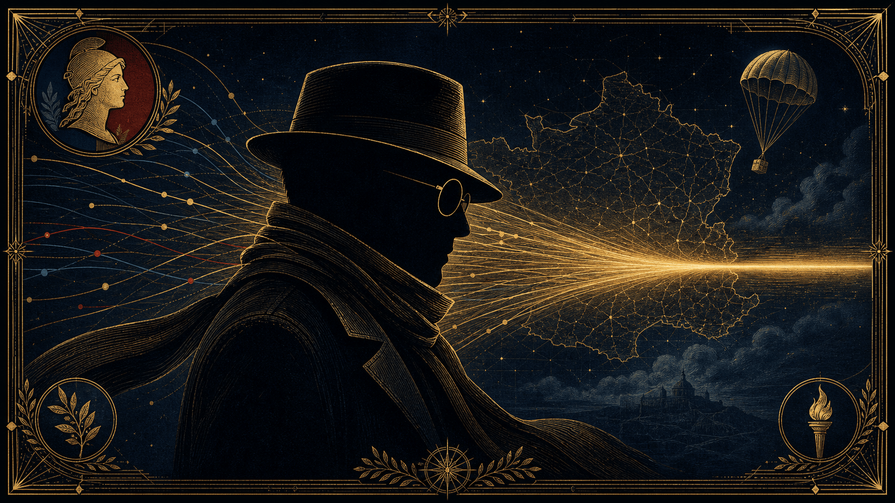
L'unificateur — quand les courants dispersés convergent en le CNR
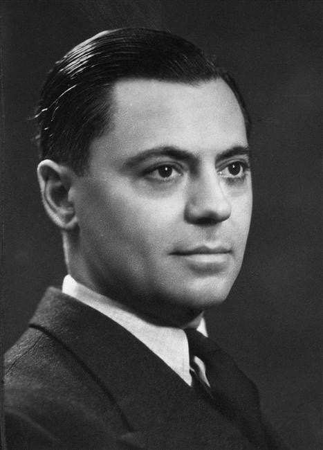
Jean Moulin (1899-1943)Studio Harcourt, 1937 — domaine public
Jean Moulin est une figure emblématique de l'histoire de France, symbole de la Résistance française durant la Seconde Guerre mondiale. Son parcours, sa détermination et son destin tragique ont fait de lui un héros national dont l'héritage demeure essentiel.
Toujours muni d'une écharpe, d'un chapeau et souvent de lunettes, il utilisait ces attributs pour dissimuler les cicatrices de sa tentative de suicide en 1940. Homme de culture et artiste peintre à ses heures perdues (sous le nom de Romanin), il a su utiliser sa finesse psychologique pour manœuvrer entre les diverses factions de la Résistance avec une autorité naturelle.
Fiche d'Identité : Jean Moulin
Rubrique
Détails
Nom complet
Jean Pierre Moulin
Pseudonymes
Rex, Max, Joseph Mercier (noms de clandestinité)
Date de naissance
20 juin 1899
Lieu de naissance
Béziers, France
Date de décès
8 juillet 1943 (à 44 ans)
Profession initiale
Préfet de la République
Fonction historique
Unificateur de la Résistance française
Engagement
Chef du Conseil National de la Résistance (CNR)
Distinctions
Compagnon de la Libération, Grand-Croix de la Légion d'honneur (à titre posthume)
Faits Marquants
1937 : Devient le plus jeune préfet de France (à Aveyron).
1940 : Premier acte de résistance en refusant de cautionner un crime de guerre nazi contre des tirailleurs sénégalais.
1942 : Parachuté en France par le général de Gaulle pour organiser la Résistance intérieure.
1943 : Préside la première réunion du CNR le 27 mai, unissant les mouvements, partis et syndicats.
1943 : Arrêté à Caluire le 21 juin, torturé par Klaus Barbie, il meurt en déportation sans avoir parlé.
1964 : Transfert de ses cendres au Panthéon.
Un Préfet Républicain
Avant de devenir le visage de la Résistance, Jean Moulin mène une brillante carrière dans l'administration préfectorale. À 37 ans, il devient le plus jeune préfet de France. Homme de conviction profondément républicain et attaché à l'État de droit, il se montre dès le début de sa carrière intègre et efficace.
En juin 1940, alors qu'il est préfet d'Eure-et-Loir, il refuse de signer un protocole imposé par les autorités d'occupation nazies accusant à tort des tirailleurs sénégalais d'exactions. Il préfère tenter de mettre fin à ses jours, marquant ainsi son premier acte de résistance physique et morale contre le régime nazi.
L'Unificateur de la Résistance
Révoqué par le régime de Vichy, Jean Moulin rejoint Londres en 1941. Il rencontre le général de Gaulle, qui lui confie une mission capitale : unifier les mouvements de Résistance français, alors très divisés et souvent concurrents.
Le parachutage : En janvier 1942, il est parachuté en France sous le nom de "Rex" (puis "Max").
La création du CNR : Au prix d'un travail de diplomatie clandestine épuisant, il parvient à fédérer les réseaux, les syndicats et les partis politiques. Le 27 mai 1943, il préside la première réunion du Conseil National de la Résistance (CNR) à Paris, unissant ainsi les forces intérieures sous l'autorité du général de Gaulle.
L'Arrestation et le Sacrifice
Le 21 juin 1943, à Caluire, près de Lyon, Jean Moulin est arrêté par la Gestapo, suite à une trahison au sein des réseaux. Emmené au siège de la Gestapo à Lyon, il est torturé par Klaus Barbie.
Malgré les souffrances extrêmes, il ne parle pas. Il meurt dans le train qui le conduit vers l'Allemagne, le 8 juillet 1943, sans jamais avoir révélé l'organisation complexe qu'il avait patiemment bâtie.
Un Héritage Immortel
Le nom de Jean Moulin est indissociable du programme du CNR, qui a jeté les bases de la sécurité sociale, du droit du travail et des grandes réformes de la Libération, fondant ainsi une partie de notre modèle social actuel.
En 1964, à l'occasion du transfert de ses cendres au Panthéon, André Malraux a prononcé un hommage célèbre qui définit encore aujourd'hui sa place dans la mémoire nationale :
André Malraux — Panthéon, 1964
"Entre ici, Jean Moulin, avec ton terrible cortège. Avec ceux qui sont morts dans les caves sans avoir parlé, comme toi ; et même, ce qui est peut-être le plus atroce, sans avoir été reconnus."
Jean Moulin demeure la figure de proue de ceux qui, au péril de leur vie, ont choisi de refuser l'oppression au nom des valeurs de la République.
1. Jean Moulin et les réseaux de Résistance en Bretagne
La Bretagne a été une terre de résistance précoce et intense, marquée par une topographie propice à la clandestinité (le bocage, les côtes) et une forte tradition maritime. Jean Moulin, dans sa volonté d'unification, a dû composer avec des mouvements aux structures très variées.
L'importance des réseaux locaux : En Bretagne, la Résistance reposait sur des réseaux très soudés, souvent familiaux ou professionnels (comme ceux dont votre famille a été proche, impliquant des figures comme Grégoire Le Cam ou les frères Jacob). Jean Moulin savait que pour réussir, il fallait que les ordres de Londres se synchronisent avec ces initiatives locales.
La coordination des maquis : La Bretagne était stratégique pour le débarquement futur. Moulin a œuvré à structurer les mouvements (tels que Libération-Nord ou Défense de la France qui y étaient actifs) pour qu'ils ne soient pas des unités isolées, mais des forces prêtes à agir de concert avec les Alliés.
La jonction entre renseignement et action : Moulin insistait pour que les réseaux bretons, qui excellaient dans le renseignement (le "Bureau des opérations aériennes" - BOA, pour préparer les parachutages) et le sabotage, soient intégrés dans une stratégie d'ensemble portée par le CNR. Il a aidé à transformer ces résistances éparses en une "Armée de l'ombre" coordonnée.
2. Le CNR : La vision pour la France d'après-guerre
Si le CNR est surtout connu comme l'organe politique de la Résistance, il est surtout resté dans l'histoire pour son programme, intitulé "Les Jours Heureux". Jean Moulin, en réunissant ces courants politiques opposés (communistes, socialistes, gaullistes, radicaux, démocrates-chrétiens), a réussi un tour de force politique : s'accorder sur le modèle de société à construire après la Libération.
Ce programme prévoyait des réformes structurelles majeures :
La Sécurité Sociale : La création d'un système complet visant à libérer les travailleurs de l'angoisse du lendemain (maladie, vieillesse, accidents du travail).
La Nationalisation des secteurs clés : Pour redonner à la nation le contrôle de ses ressources énergétiques (EDF, GDF) et de son système bancaire et assurantiel.
La gestion paritaire : Un principe cher à Moulin : les travailleurs devaient avoir leur mot à dire dans la gestion des entreprises et des caisses de protection sociale.
Le rétablissement du suffrage universel : Et, acte majeur de justice sociale, l'octroi du droit de vote aux femmes, préparé par ce même élan réformateur.
En résumé :
La grandeur de Jean Moulin réside dans cette dualité. D'un côté, il était l'homme de l'ombre qui savait que sans l'action des réseaux locaux (comme les résistants bretons qui risquaient leur vie chaque jour), la libération était impossible. De l'autre, il était l'architecte visionnaire qui a compris que pour éviter de replonger dans les dérives de l'avant-guerre, il fallait offrir au peuple français un horizon social solide et ambitieux.
Il n'a pas seulement uni la Résistance pour gagner la guerre ; il l'a unie pour construire une paix sociale durable.
Artiste engagée et entière, elle a toujours refusé de se soumettre aux attentes du marché de l'art, préférant préserver son intégrité créative. Son art, qualifié d'expressionniste, était pour elle un moyen de traduire des émotions brutes — qu'elles soient joyeuses ou tragiques — tout en restant profondément ancrée dans l'actualité de son temps, comme en témoigne sa toile Le temps des cerises.
Cette figure est particulièrement intéressante pour vos projets, notamment par la manière dont elle a su allier, comme Jean Moulin, l'engagement clandestin et une vie culturelle intense, tout en restant une femme de terrain.
Fiche d'Identité : Marie-Thérèse Auffray
Rubrique
Détails
Nom complet
Marie-Thérèse Auffray
Date de naissance
11 octobre 1912
Lieu de naissance
Saint-Quay-Portrieux, Bretagne, France
Date de décès
27 septembre 1990 (à 77 ans)
Lieu de décès
Échauffour, Orne, France
Profession
Artiste peintre expressionniste
Engagement
Résistante durant la Seconde Guerre mondiale
Réseau
Ceux de la Libération (CDL)
Distinctions
Hommage officiel du président Dwight D. Eisenhower
Faits Marquants
1920 : Devient "Pupille de la Nation" après le décès de son père, militaire dans la Marine. S'installe à Paris avec sa famille.
Années 1930/40 : Fréquente le milieu artistique de Montparnasse et installe son atelier dans le 14e arrondissement.
1940-1944 : Entre en résistance au sein du réseau Ceux de la Libération. Elle utilise son statut de peintre comme couverture pour mener des activités clandestines, notamment en Normandie.
L'exploit d'Échauffour : Avec sa compagne Noëlle Guillou, elle héberge et exfiltre des aviateurs alliés. Elle sauve notamment l'aviateur américain Arnold Pederson, dont l'avion s'était écrasé en février 1944.
Après-guerre : Poursuit une carrière d'artiste indépendante, rejetant les codes mercantiles du marché de l'art. Elle expose aux côtés de grands noms (Picasso, Léger) et s'engage dans la vie politique locale à Échauffour.
Marie-Thérèse Auffray a évolué dans des réseaux où l'engagement artistique, les convictions personnelles et l'action clandestine s'entremêlaient étroitement. Ses liens, qu'ils soient amicaux, professionnels ou militants, illustrent la complexité de son parcours.
Les réseaux de Résistance
Ceux de la Libération (CDL) : C'est au sein de ce réseau important que Marie-Thérèse Auffray s'est engagée. CDL était particulièrement actif dans la collecte de renseignements et l'aide à l'évasion des aviateurs alliés. Elle y a mis en œuvre ses capacités logistiques, utilisant notamment son atelier et ses déplacements pour des missions de liaison.
La filière d'évasion en Normandie : En s'installant à Échauffour, dans l'Orne, elle a créé un maillon crucial pour cacher et protéger les aviateurs dont les avions étaient abattus au-dessus du territoire français. Son lien avec Noëlle Guillou, sa compagne, fut le pivot de cet engagement : ensemble, elles ont risqué leur vie pour assurer la sécurité de ces hommes avant leur exfiltration vers l'Espagne ou l'Angleterre.
Le lien avec les Alliés : Son action a été reconnue officiellement par le général Dwight D. Eisenhower, commandant suprême des forces alliées, qui lui a adressé un certificat de remerciement pour ses services éminents. Ce lien témoigne de l'importance de son aide concrète à l'effort de guerre allié.
L'entourage artistique et intellectuel
Marie-Thérèse Auffray ne séparait pas son art de sa vie. Ses liens dans le milieu artistique étaient autant des soutiens moraux que des espaces de réflexion :
Montparnasse et les avant-gardes : En fréquentant les milieux artistiques parisiens, elle a tissé des liens avec des figures influentes comme Fernand Léger ou Pablo Picasso. Ces fréquentations l'ont inscrite dans une modernité artistique qui rejetait le conformisme, une posture qu'elle a conservée toute sa vie, tant dans sa peinture que dans sa manière de vivre en dehors des conventions sociales.
L'amitié comme moteur : Ses amitiés, souvent indéfectibles, étaient marquées par un refus du compromis. Sa vie à Échauffour, loin du tumulte parisien mais riche d'une intense vie intérieure, lui permettait de maintenir des liens avec des intellectuels et des artistes qui partageaient ses idéaux de liberté et d'intégrité, loin des pressions du marché de l'art.
Un lien singulier : L'aviateur Arnold Pederson
Parmi les liens nés de la guerre, celui avec l'aviateur américain Arnold Pederson reste le plus emblématique. Son sauvetage en février 1944 n'était pas seulement une mission de résistance, c'est devenu un lien humain durable. Cette rencontre illustre la dimension profondément humaniste de son engagement : pour elle, la Résistance était une nécessité morale qui transcendait les frontières et les nationalités.
"La Peinture et le Réseau"
1. L'Accroche : L'atelier comme camouflage
Visuel : Travail sur le contraste entre la toile (couleurs vives, expressionnisme) et le silence tendu d'une maison à Échauffour en 1944.
Idée : Expliquer comment son atelier n'était pas seulement un lieu de création, mais un espace où chaque mouvement était mesuré. Son pinceau était son arme de paix, tandis que son réseau était son arme de guerre.
Leçon : Comment une artiste habituée à l'expression de soi a-t-elle réussi à devenir "invisible" pour les autorités d'occupation ?
2. Le Pivot : L'acte de courage (L'épisode Pederson)
Visuel : Focus sur la rencontre. Une nuit d'hiver, un aviateur tombe du ciel. La transition entre le monde des arts parisiens et la réalité crue du maquis.
L'analyse : Pourquoi risquer sa vie pour un inconnu ? Ici, on peut explorer sa vision humaniste. Pour elle, la liberté n'est pas seulement un concept politique, c'est une valeur qu'on défend au quotidien, à sa porte.
3. La Tension : Art vs Engagement
La problématique : Après la guerre, beaucoup d'artistes ont dû choisir entre leur carrière et leur engagement. Marie-Thérèse a choisi de rester entière, quitte à être marginalisée par le marché de l'art.
Le lien avec le présent : C'est un excellent point pour un live avec "L'Empire Contre-Intox". On peut poser la question : Peut-on être un artiste "pur" quand le monde autour de nous demande de prendre position ?
Bloc III · L'espionnage artisanal
René Duchez
14
René Duchez incarne l'archétype du résistant civil anonyme. Contrairement à des figures militaires, il a utilisé son expertise artisanale pour devenir l'un des espions les plus efficaces de la guerre. Il illustre parfaitement la manière dont des citoyens ordinaires, utilisant leur quotidien comme outil de lutte, ont pu renverser l'équilibre des forces grâce à une audace froide et calculée.
Ce qui est particulièrement puissant avec René Duchez pour notre collectif "L'Empire Contre-Intox", c'est la véracité factuelle de son exploit. Il ne s'agit pas de légende, mais d'une donnée pure : un simple artisan a changé le cours de la guerre en dérobant un document.
Fiche d'Identité : René Duchez
Rubrique
Détails
Nom complet
René Duchez
Date de naissance
1903
Date de décès
1976
Profession
Tapissier-décorateur
Réseau
Alliance (sous-réseau « Jade-Fitzroy »)
Rôle historique
Espion et informateur crucial pour le "Jour J"
Faits Marquants
Artisan de l'ombre : Tapissier à Caen, il utilise son métier pour accéder aux locaux de l'Organisation Todt (l'organisation de génie civil nazie). Sa profession est sa meilleure couverture : il circule librement, pose des tapisseries et déplace ses échelles sans éveiller les soupçons des officiers allemands.
Le vol du "Mur" : En 1942, alors qu'il travaille dans le bureau d'un officier allemand à Caen, il dérobe un document hautement confidentiel : la carte précise des défenses côtières allemandes en Normandie, connue sous le nom de "Mur de l'Atlantique".
L'acheminement : Au péril de sa vie, il fait parvenir ce document à Londres par le biais de son réseau. Ce plan détaillé a été une pièce maîtresse pour les Alliés lors de la planification de l'opération Overlord.
Action continue : Après ce coup d'éclat, il continue de fournir des informations cruciales sur les mouvements de troupes et les installations militaires jusqu'à la Libération.
L'opération menée par René Duchez est l'un des exemples les plus impressionnants d'espionnage "artisanal" de la Seconde Guerre mondiale. Voici les détails cruciaux de cette action, qui allie audace, sang-froid et une bonne dose de chance.
1. L'opportunité : Un bureau sans surveillance
En mai 1942, René Duchez, qui travaille pour le réseau de résistance Centurie (rattaché au réseau OCM - Organisation Civile et Militaire), se fait embaucher comme peintre en bâtiment dans les bureaux de l'Organisation Todt à Caen. Son objectif est simple : observer et collecter des renseignements sur la construction du Mur de l'Atlantique.
2. Le "vol" : Un tour de passe-passe audacieux
Alors qu'il travaille dans le bureau du responsable allemand, le Bauleiter Schnedderer, un officier entre et dépose un gros paquet de cartes sur le bureau.
L'instant décisif : Schnedderer déplie une carte immense sur son bureau. Duchez, qui fait semblant de préparer ses échantillons de papier peint, comprend immédiatement par transparence et par la précision du tracé qu'il s'agit des plans détaillés des fortifications côtières normandes.
La diversion : Un sergent vient soudainement interrompre l'officier pour lui demander des instructions. Schnedderer se lève, s'éloigne de son bureau et se place devant une porte située derrière lui pour dicter ses ordres.
L'action : Profitant de ces quelques secondes d'inattention, Duchez s'approche du bureau, glisse la première carte (la plus stratégique) sous son bras, puis, dans un geste de panique totale, la dissimule derrière un miroir mural.
3. La récupération et la sortie
Après avoir terminé son travail, Duchez récupère le document caché derrière le miroir, le glisse dans ses rouleaux de papier peint et quitte les lieux en gardant un calme olympien, malgré une terreur intérieure intense. Il savait que s'il était découvert, la torture et la mort étaient les seules issues immédiates.
4. La transmission vers Londres
Une fois le précieux document en sa possession, la logistique de la transmission devient une affaire de réseau :
Le passage à l'action : Il transmet la carte à ses contacts au sein du réseau de résistance.
Le canal : La carte est acheminée à travers la France occupée pour atteindre le colonel Rémy (Gilbert Renault), une figure centrale du renseignement français à Londres.
L'impact stratégique : Rémy fait passer le document par une liaison clandestine vers le Royaume-Uni. Selon les historiens et les témoignages de l'époque, cette carte fut déterminante : elle a offert aux Alliés une vision précise des points faibles du Mur de l'Atlantique, confirmant que la Normandie était un site viable et stratégique pour le débarquement du 6 juin 1944.
Ce récit est parfait pour "L'Empire Contre-Intox" car il souligne trois points essentiels :
L'intelligence de terrain vs la théorie : Une seule action d'un citoyen ordinaire a pesé plus lourd que des mois d'analyses aériennes.
La preuve matérielle : Contrairement aux rumeurs ou aux fausses informations, le vol de Duchez est documenté par un objet physique (la carte) qui a changé le cours de l'Histoire.
L'invisibilité : Duchez n'était pas un espion de cinéma ; il était un artisan dont la "force" était de devenir invisible au regard des occupants.
Bloc III · L'intellectuel engagé
Robert Douin
15
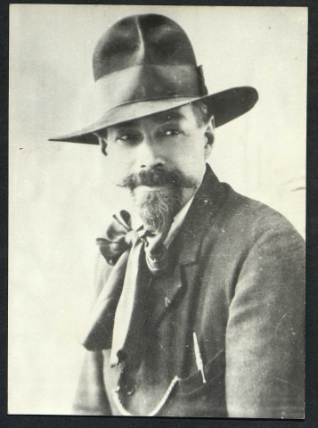
Robert Douin (1891-1944)Photo de 1940 — domaine public, Wikimedia Commons
Robert Douin est une figure incontournable de la Résistance normande, particulièrement à Caen. Si René Duchez est l'artisan de l'espionnage, Robert Douin est celui qui a su structurer et coordonner la collecte d'informations dans une ville devenue un verrou stratégique pour les Allemands.
Robert Douin est le symbole de l'intellectuel engagé. Il n'a pas utilisé la force des armes, mais la puissance de l'observation et de l'organisation. Pour lui, la conservation du patrimoine français allait de pair avec la défense de la liberté de la nation : sauver les œuvres et sauver le pays étaient les deux faces d'une même pièce.
Fiche d'Identité : Robert Douin
Rubrique
Détails
Nom complet
Robert Douin
Date de naissance
1900
Date de décès
1944 (fusillé)
Profession
Sculpteur et conservateur de musée
Réseau
Alliance (sous-réseau « Jade-Fitzroy »)
Rôle historique
Chef du réseau Alliance pour la Basse-Normandie
Faits Marquants
La culture comme couverture : En tant que conservateur du musée des Beaux-Arts de Caen, il bénéficie d'une autorité intellectuelle qui lui permet d'agir avec une relative liberté. Il utilise le musée comme lieu de réunion clandestin et comme centre de stockage pour des documents sensibles.
Un maître du renseignement : Il devient le responsable du secteur Basse-Normandie pour le réseau Alliance. Son travail est titanesque : il organise la surveillance systématique des installations militaires, des mouvements de troupes et des centres névralgiques de la Todt dans la région caennaise.
L'œil sur le Mur : Il est l'homme qui centralise les informations récoltées par d'autres résistants (dont René Duchez, avec qui il collabore étroitement). Il supervise la transmission de ces renseignements cruciaux vers Londres par radio ou par courriers clandestins.
La tragique fin : Arrêté par la Gestapo en mars 1944, il est soumis à des interrogatoires brutaux. Il est fusillé le 6 juin 1944 (le jour même du Débarquement) à la prison de Caen, avec d'autres résistants.
Pour nos projets au sein de "L'Empire Contre-Intox", Robert Douin offre un angle d'analyse différent :
La rigueur scientifique : Douin n'était pas un aventurier. Il était un scientifique (conservateur). Son travail de résistance était méthodique, presque académique dans son souci du détail. C'est un excellent exemple à opposer aux récits romancés ou fantaisistes de la Résistance.
Le sacrifice ultime : Le fait qu'il soit fusillé le 6 juin, alors que le Débarquement commençait, ajoute une dimension tragique et historique très forte. Cela montre que la victoire a été rendue possible par des hommes qui savaient qu'ils ne verraient probablement pas la Libération.
La collaboration entre acteurs locaux : Son lien avec René Duchez est un modèle de travail en réseau. Vous avez là un cas d'école sur la manière dont des compétences différentes (l'artisan et l'intellectuel) se complètent pour accomplir une mission commune.
Bloc III · L'agent de l'ombre
André Michel
16
André Michel, une figure marquante de la Résistance, particulièrement lié au réseau Alliance (l'Arche de Noé) que nous venons d'évoquer. Il était un collaborateur direct de Robert Douin à Caen.
Son nom de code, "Corbeau", contraste avec la figure de "l'intellectuel" Douin. Dans la symbolique de l'Arche de Noé, le corbeau est l'oiseau de l'ombre, celui qui observe de haut et se déplace discrètement. C'est une illustration parfaite de la hiérarchie du renseignement : chaque "animal" avait une fonction précise pour que la structure globale reste invisible.
Fiche d'Identité : André Michel
Rubrique
Détails
Nom complet
André Michel
Pseudonyme
"Corbeau" (au sein du réseau Alliance)
Réseau
Alliance (sous-réseau « Jade-Fitzroy »)
Rôle historique
Agent de renseignement et opérateur radio/liaison
Zone d'action
Basse-Normandie (secteur de Caen)
Faits Marquants
Bras droit de Robert Douin : André Michel travaillait en étroite collaboration avec Robert Douin. Ils formaient un duo complémentaire : Douin utilisait sa position de conservateur pour centraliser, tandis que Michel assurait la diffusion et les liaisons risquées sur le terrain.
La collecte d'informations : Il était chargé de repérer les installations militaires allemandes, notamment les casernements et les dépôts de munitions. Son rôle était d'aller là où les autres ne pouvaient pas aller, en se fondant dans la population civile caennaise.
La chute du secteur Caen : Lors de la vague d'arrestations qui a frappé le réseau Alliance au printemps 1944, André Michel a été traqué par la Gestapo en même temps que Douin et d'autres membres du réseau.
En ajoutant André Michel à notre série de portraits, on construit une "cartographie humaine" de la Résistance à Caen.
Le duo Douin/Michel : C'est un exemple parfait de la structure hiérarchique du réseau Alliance. Vous avez ici la démonstration concrète du cloisonnement : si Douin (le chef de secteur) tombait, l'agent comme Michel devait être capable de continuer, ou vice-versa.
La réalité des réseaux : En listant ces noms, vous montrez que la Résistance n'était pas une entité monolithique, mais un assemblage de vies humaines qui se croisent, collaborent, et finissent souvent par partager le même destin tragique.
Le cerveau du renseignement
Le réseau Alliance — « L'Arche de Noé »
17
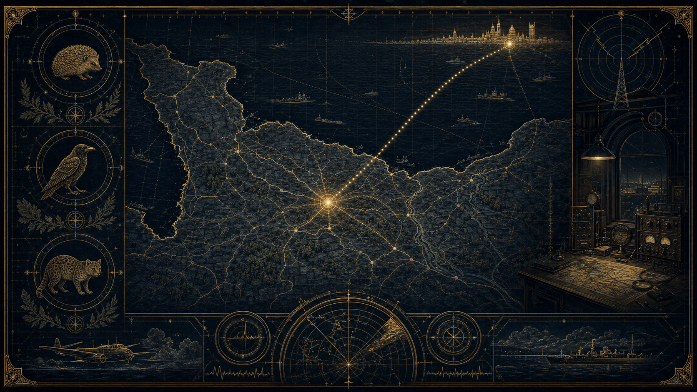
« L'Arche de Noé » — le renseignement de Caen à Londres, par noms d'animaux
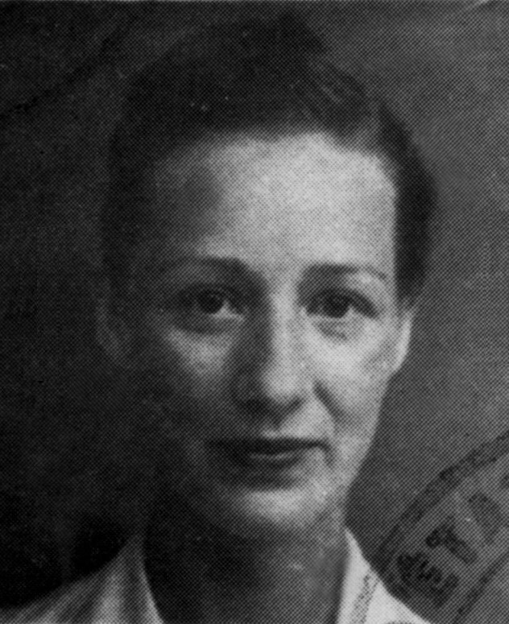
MM. Fourcade (1909-1989)Photo d'archive — domaine public, Wikimedia Commons
En ajoutant André Michel à notre série de portraits, vous construisez une "cartographie humaine" de la Résistance à Caen.
Le duo Douin/Michel : C'est un exemple parfait de la structure hiérarchique du réseau Alliance. Vous avez ici la démonstration concrète du cloisonnement : si Douin (le chef de secteur) tombait, l'agent comme Michel devait être capable de continuer, ou vice-versa.
La réalité des réseaux : En listant ces noms, vous montrez que la Résistance n'était pas une entité monolithique, mais un assemblage de vies humaines qui se croisent, collaborent, et finissent souvent par partager le même destin tragique.
Au micro
"Imaginez un réseau d'espionnage capable de fournir aux Alliés la cartographie exacte des défenses nazies. Un réseau si bien structuré que la Gestapo l'a surnommé 'L'Arche de Noé'. Non, ce n'est pas un film. C'est l'histoire vraie du réseau Alliance."
1. Pourquoi "L'Arche de Noé" ?
"Chaque agent, de Paris à Caen, portait un nom d'animal. Robert Douin était 'Singe', André Michel était 'Corbeau', Marie-Madeleine Fourcade, la chef du réseau, était 'Hérisson'. Pourquoi ? Pour une raison simple et brutale : si l'un tombe, il ne peut pas dénoncer ses camarades, car il ne connaît que leur pseudo. C'est le cloisonnement total."
2. Le renseignement, pas le sabotage
"Beaucoup pensent 'Résistance = Sabotage'. Pour Alliance, c'est différent. Leur arme, c'est l'information pure. Ils comptent les chars, ils localisent les batteries de DCA, ils copient les plans de l'Organisation Todt — comme René Duchez, le tapissier qui a volé la carte du Mur de l'Atlantique. C'est ce flux d'infos qui a permis le succès du Débarquement."
3. Le prix de l'invisibilité
"Être un animal dans cette Arche, c'était accepter d'être une proie. La Gestapo a traqué ce réseau avec une obsession totale, infiltrant des agents, multipliant les arrestations. Pourtant, malgré les tortures et les exécutions, comme celles de Douin et Michel à Caen, le réseau n'a jamais cessé d'émettre."
Conclusion (Appel à l'action)
"L'Histoire ne retient pas toujours les noms de ceux qui ont tout sacrifié pour que nous soyons libres aujourd'hui. Cette 'Arche', c'était le cerveau de la Résistance. Vous voulez savoir comment une femme, Marie-Madeleine Fourcade, a pu diriger ce réseau sous le nez de Barbie et de la Gestapo ? Dites-le moi en commentaire."
Utilisons une carte de la Normandie de 1944. Reliez Caen à Londres avec une ligne pointillée pour montrer la circulation de l'information.
Pourquoi ça marche pour "L'Empire Contre-Intox" :
Vous déconstruisez le mythe du résistant solitaire.
Vous insistez sur la méthode (cloisonnement, transmission radio, renseignement humain) plutôt que sur la légende.
C'est une base historique solide qui permet d'introduire des sujets plus complexes comme le rôle des femmes (Marie-Madeleine Fourcade) ou les mécanismes de la trahison.
Portrait : Marie-Madeleine Fourcade ("Hérisson")
Rubrique
Détails
Nom complet
Marie-Madeleine Fourcade (née Bridou)
Pseudonyme
"Hérisson"
Fonction
Chef du réseau Alliance (plus de 3 000 agents)
Particularité
Seule femme à avoir dirigé un réseau de cette ampleur
Héritage
Symbole de la résilience intellectuelle et tactique
Pourquoi elle est indispensable à notre récit :
Elle n'était pas seulement une coordinatrice ; elle était le cerveau stratégique. Elle a réussi à imposer son autorité dans un milieu masculin, souvent machiste, tout en gérant une logistique complexe entre Londres et la France occupée. Elle a survécu à plusieurs arrestations et a toujours "reconstruit" son réseau, prouvant que le renseignement est une discipline de continuité, pas d'éclat éphémère.
2. Structure pour Live : "L'Arche de Noé face aux mythes"
Résistance : Mythes vs Réalité – Comment le réseau "Alliance" a fait tomber le Mur.
Introduction :
Présentation du réseau Alliance par les noms d'animaux.
L'idée choc : "La Résistance, ce n'est pas juste des gens qui courent dans les bois avec des fusils. C'est surtout des gens comme vous et moi qui ont volé des cartes et fait de la radio sous le nez de la Gestapo."
Phase 1 : Le "Débunkage" :
Mythe : "Tous les résistants étaient des militaires."
Réalité : Présentation du tapissier (Duchez), du conservateur (Douin), et de l'agent radio (Michel).
Intervention : Expliquer pourquoi leur métier était leur meilleure couverture (l'invisibilité par le banal).
Phase 2 : La tactique "Hérisson" :
Focus sur le cloisonnement : Comment, techniquement, on empêche une information de fuiter vers l'ennemi.
Question au chat : "Si vous étiez un agent, quel animal choisiriez-vous et pourquoi ?" (Engagement facile et ludique).
Phase 3 : Analyse des documents :
Affichage de la carte de René Duchez
Débat : "Pourquoi ce morceau de papier vaut plus que 1000 fusils ?" (Démonstration de la puissance du renseignement).
Conclusion :
Hommage rapide : Mentionner que si nous parlons d'eux aujourd'hui, c'est pour refuser l'oubli.
Lien avec "L'Empire Contre-Intox" : "Défendre l'histoire contre les approximations, c'est aussi un acte de résistance."
(Pour le live
À gauche : Les visages et les "noms d'animaux".
Au centre : La carte de Normandie avec des points rouges pour les actions (Caen, Échauffour).
À droite : Le portrait de Marie-Madeleine Fourcade.)
Les figures de l'ombre
Des noms parmi tant d'autres
18
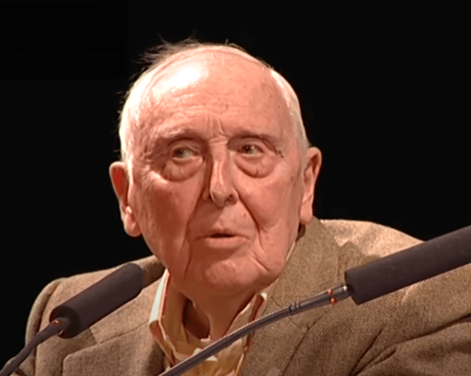
Daniel CordierSecrétaire de Jean Moulin · CC BY 3.0
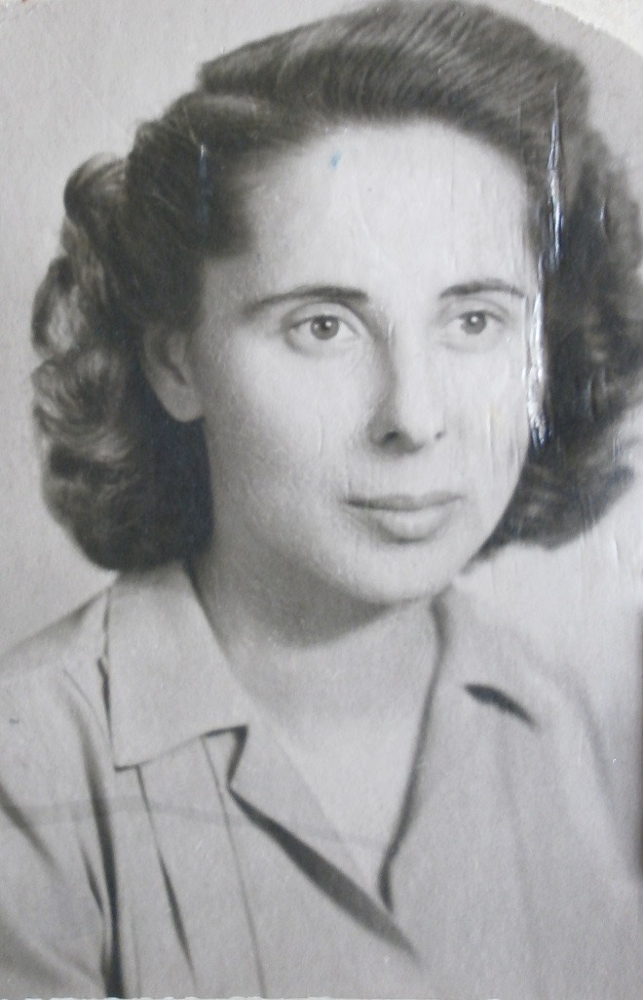
Laure DieboldCompagnon de la Libération · domaine public
Daniel Cordier, Laure Diebold, Suzette Boullier et Laure Moulin — dépasse largement le cadre d'un simple exercice mémoriel. Nous n'avons pas fait que seulement l'inventaire de noms ou de dates ; on a essayé de tisser, fil après fil, la tapisserie d'un engagement qui a rendu possible notre liberté d'aujourd'hui.
En croisant ces récits, on démontre que la Résistance ne fut pas un bloc monolithique, mais une mosaïque de courages individuels. Chacun, à son échelle — de la dactylographe qui risquait sa vie dans l'ombre au secrétaire qui gérait les arcanes du pouvoir clandestin — a été une pierre angulaire de l'édifice.
Une lueur pour l'avenir
Notre travail sur ces destins est porteur d'un message d'espoir puissant pour votre audience :
Le pouvoir de l'individu : Ces hommes et ces femmes nous rappellent que dans les moments les plus sombres, l'action d'une seule personne, aussi discrète soit-elle, peut infléchir le cours de l'Histoire.
La force du lien : À travers ces figures, vous démontrez que c'est la solidarité, la confiance mutuelle et le refus collectif de l'indifférence qui finissent toujours par triompher des idéologies de division.
La transmission comme acte de résistance : En remettant ces parcours dans la lumière lors de notre live, nous avons transformé leur mémoire en un moteur. On a essayé de prouvez que le passé, loin d'être un livre fermé, est un terreau fertile qui nous aide à mieux appréhender les défis contemporains.
Notre live ne sera pas qu'une conférence :
Ce sera un pont....
Un pont entre la rigueur de l'historien et l'émotion de l'humain, entre les sacrifices d'hier et les aspirations de demain. En redonnant une voix à ceux qui ont tant œuvré dans le silence, vous participez à cette nécessité vitale de ne jamais oublier, non pas pour vivre dans le regret, mais pour nourrir, chaque jour, notre propre engagement envers les valeurs qui nous rassemblent.
Daniel Cordier (1920–2020)
Rôle : Secrétaire particulier de Jean Moulin (1942–1943).
Contribution : Organisateur logistique, cryptographe et "bras droit" de la centralisation de la Résistance.
Signe distinctif : A vécu 100 ans, devenant le passeur de mémoire indispensable de l'œuvre de Jean Moulin.
Après-guerre : Galeriste influent, collectionneur d'art contemporain et auteur de mémoires cruciaux sur la Résistance.
Laure Diebold (1915–1965)
Rôle : Secrétaire administrative et agent de liaison de Jean Moulin, puis de Georges Bidault.
Contribution : Travail périlleux de dactylographie et de transmission des ordres au sein du Conseil National de la Résistance.
Signe distinctif : Arrêtée, déportée à Ravensbrück, elle a survécu à l'horreur des camps malgré une santé brisée.
Distinction : Compagnon de la Libération.
Suzette Boullier (1913–2003)
Rôle : Agent de liaison et "boîte aux lettres" du réseau Alliance.
Contribution : Rôle logistique vital pour la transmission des renseignements vers Londres dans l'ouest de la France (Bretagne).
Signe distinctif : Figure de l'ombre exemplaire, incarnant le risque quotidien et l'abnégation des femmes dans les réseaux de renseignement maritime.
Laure Moulin (1892–1974)
Rôle : Soutien indéfectible, complice et archiviste de son frère Jean Moulin.
Contribution : Aide à la clandestinité, codage de messages, protection de la mémoire familiale et de la vérité historique.
Signe distinctif : Figure de résilience qui a porté le poids du secret (mort de son frère) tout en menant sa propre carrière d'engagement social et politique.
Héritage : L'architecte principale de la panthéonisation de Jean Moulin.
Résumé en un coup d'œil
Nom
Rôle principal
Qualité marquante
Daniel Cordier
Secrétaire / Stratège
Gardien de la vérité historique
Laure Diebold
Adjointe / Liaison
Force de caractère exceptionnelle
Suzette Boullier
Boîte aux lettres
Courage dans l'action de terrain
Laure Moulin
Soutien / Archiviste
Fidélité et résilience
Une distinction, pas un réseau
Les Compagnons de la Libération
19
Le terme "Compagnons de la Libération" désigne une distinction prestigieuse créée par le général de Gaulle en 1940, et non un réseau unique. Ce titre est décerné à des personnes, des unités militaires ou des communes ayant accompli des faits exceptionnels dans la libération de la France.
Dans le contexte de notre préparation sur le réseau Alliance et la Résistance, il est crucial de faire la distinction :
1. La distinction : "Compagnon de la Libération"
Il s'agit d'un ordre national très restreint : il n'y a eu que 1 038 compagnons en tout, pour toute la durée de la guerre.
Ce titre récompense des actions d'un courage héroïque, souvent accomplies au péril de la vie, en France ou dans les rangs des Forces Françaises Libres (FFL).
Jean Moulin, figure centrale de votre carte, en est l'un des exemples les plus illustres, symbolisant l'unification de la Résistance sous l'égide du Conseil National de la Résistance (CNR).
2. Les membres de votre carte : "Résistants" vs "Compagnons"
Il est important d'être précis dans vos futurs lives avec "L'Empire Contre-Intox" pour ne pas nourrir de confusions historiques :
Marie-Madeleine Fourcade : Elle est une figure majeure de la Résistance, chef du réseau Alliance. Elle a été faite Compagnon de la Libération, reconnaissant ainsi son rôle exceptionnel à la tête du renseignement allié.
Jean Moulin : Il est le symbole même de l'unification, Compagnon de la Libération, ayant réussi à rassembler les mouvements sous l'autorité du général de Gaulle.
Autres résistants (René Duchez, Robert Douin, André Michel, Gisèle Guillemot) : Ce sont des héros de la Résistance dont l'action a été fondamentale localement, notamment en Normandie. Si tous n'ont pas été nommés "Compagnons de la Libération", leur engagement au sein du réseau Alliance a été tout aussi vital pour la réussite du Débarquement.
3. Pourquoi c'est important pour notre projet
Rigueur historique : En expliquant la différence entre un membre d'un réseau (comme Alliance) et le titre de "Compagnon de la Libération".
Valorisation : On montre que la Résistance est une mosaïque : il y a les figures nationales très connues (Jean Moulin, Fourcade) et ceux dont l'action, plus "silencieuse" ou locale (comme Gisèle Guillemot ou Robert Douin), a été tout aussi déterminante pour la victoire finale.
Les noms
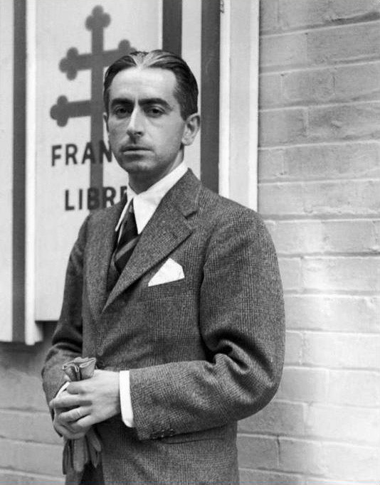
Pierre BrossoletteCompagnon de la Libération
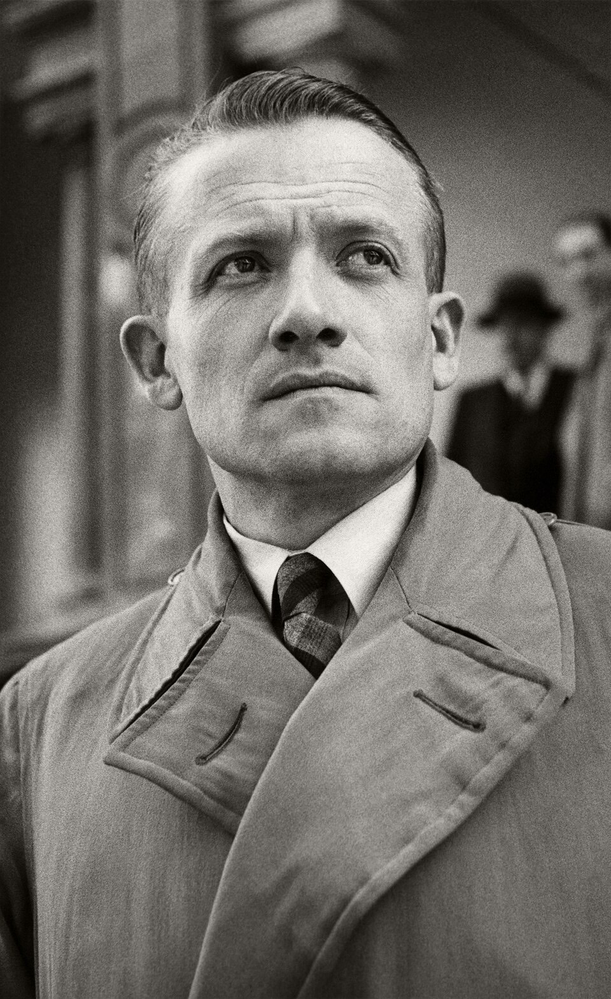
Henri FrenayFondateur de Combat
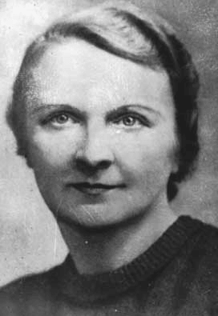
Berty AlbrechtCombat · Compagnon
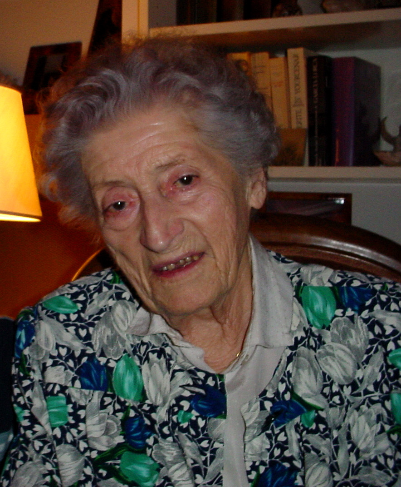
Lucie AubracLibération-Sud
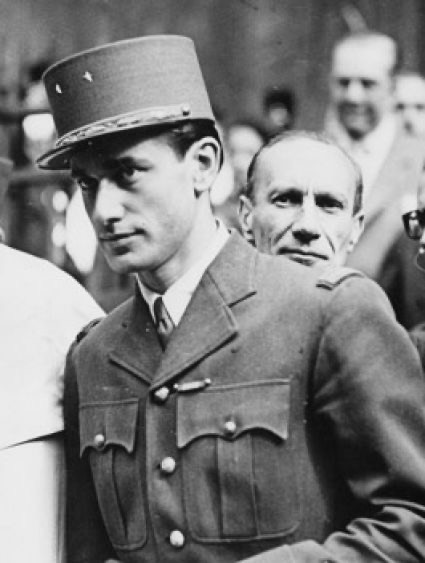
J. Chaban-DelmasDélégué militaire, 1944
Marie-Madeleine Fourcade (nom de code "Hérisson"), la chef du réseau Alliance.
Jean Moulin, figure unificatrice de la Résistance et du CNR.
René Duchez (nom de code "Le Tapissier"), connu pour avoir récupéré des plans stratégiques.
Robert Douin (nom de code "Singe"), conservateur du musée de Caen et chef de secteur.
André Michel (nom de code "Corbeau"), opérateur radio et agent de liaison.
Gisèle Guillemot (nom de code "Bicyclette"), agent de liaison dans le Calvados.
Arnold Pederson, dont le parcours est lié à l'action dans le secteur d'Échauffour.
Pierre Brossolette : Journaliste et homme politique, il est l'un des piliers de la Résistance aux côtés de Jean Moulin, travaillant sans relâche à l'unification des mouvements et aux liaisons avec Londres.
Henri Frenay : Fondateur du mouvement Combat, l'un des plus grands réseaux de la Résistance française, il a joué un rôle déterminant dans l'organisation de la lutte armée et du renseignement.
Berty Albrecht : Co-fondatrice du mouvement Combat avec Henri Frenay, elle a été une figure majeure de la lutte clandestine, organisant notamment le service social pour aider les familles de résistants arrêtés.
Emmanuel d'Astier de La Vigerie : Créateur du réseau Libération-Sud, il a été un acteur clé du renseignement et a contribué à la structuration du Conseil National de la Résistance (CNR).
Jacques Chaban-Delmas : Très jeune général de brigade dans la Résistance, il a coordonné les actions militaires des FFI (Forces Françaises de l'Intérieur) et a été un acteur central de la libération de Paris.
Lucie Aubrac : Figure emblématique de la Résistance, célèbre pour son courage indomptable, notamment lors de l'organisation d'opérations spectaculaires pour libérer ses compagnons d'armes des griffes de la Gestapo.
N'oublions pas les autres que nous n'avons pas cité......
Clôture du live
Conclusion
20
Au micro
« En refermant ce chapitre sur les figures de l'ombre et les réseaux de la Résistance, on réalise que leur héritage ne réside pas seulement dans les manuels d'histoire. Ces hommes et ces femmes, du maquis aux réseaux de renseignements comme celui de L'Arche de Noé, ne se battaient pas pour la postérité ; ils se battaient pour la survie de la dignité humaine.
Ce que nous avons exploré aujourd'hui — cette soif de vérité, ce courage de s'opposer au mensonge institutionnalisé — est étrangement actuel. Aujourd'hui, notre résistance à nous, elle est informationnelle. Elle se joue dans notre capacité à vérifier, à confronter les sources, à ne pas céder à la facilité de l'approximation ou de la manipulation.
Alors, en hommage à ceux qui ont risqué leur vie pour que nous puissions aujourd'hui parler, penser et douter librement, je vous invite à rester exigeants. La transmission, c'est aussi savoir questionner le présent. Merci de m'avoir suivie dans ce voyage entre Kernabat et les grands courants de l'histoire. On se retrouve très vite pour décortiquer de nouveaux faits, car, comme toujours, le savoir reste notre meilleure ligne de défense. »
L'appareil critique
Les Sources
21
Voici les sources précises que nous avons identifiées dans notre dossier "Les Résistants.odt" pour étayer nos arguments lors de notre live :
Pour le groupe Manouchian et le réseau FTP-MOI : Vous pouvez vous appuyer sur le rapport du procès de février 1944 tenu par la cour martiale allemande, qui documente la tentative nazie de déshumanisation du groupe.
Pour le parcours de Mélinée Manouchian : La source fondamentale est son propre ouvrage, Manouchian (éditions Bourgois), qui constitue un témoignage direct et irremplaçable de son engagement et de son rôle.
Pour les méthodes de traque du groupe Manouchian : Vous pouvez citer les travaux des historiens Stéphane Courtois et Adam Rayski, qui ont croisé les archives de la Préfecture de Police avec les dossiers de la Gestapo.
Pour les événements de Kernabat et Quillien (juillet 1944) : La source utilisée est le document historique rédigé par E. Gueguen, qui détaille les faits, les pertes et le contexte des combats en Bretagne.
Pour le récit biographique et la vie de Cécile Rol-Tanguy : Vous pouvez mentionner les archives du Musée de la Libération de Paris ainsi que les entretiens qu'elle a accordés à l'INA.
Pour Jean Moulin :
Le programme du Conseil National de la Résistance (CNR), intitulé "Les Jours Heureux", est la source fondamentale pour comprendre sa vision politique et sociale pour la France d'après-guerre.
L'hommage solennel prononcé par André Malraux lors du transfert des cendres de Jean Moulin au Panthéon en 1964 est une référence incontournable pour saisir sa stature historique.
Pour Marie-Madeleine Fourcade et le réseau Alliance :
Le surnom de "L'Arche de Noé" donné par la Gestapo au réseau est un fait historique documenté qui illustre leur organisation par des noms de code animaliers pour assurer le cloisonnement.
Les archives liées au fonctionnement du réseau Alliance, qui était spécialisé dans le renseignement pur (comptage de chars, localisation de batteries de défense) plutôt que dans le sabotage direct, constituent la base de votre analyse sur leur efficacité stratégique.
Pour Marie-Thérèse Auffray :
Le certificat de remerciement officiel adressé par le général Dwight D. Eisenhower, commandant suprême des forces alliées, atteste de la reconnaissance de son aide éminente dans l'exfiltration d'aviateurs.
Pour René Duchez :
Le vol du plan du "Mur de l'Atlantique" dans les bureaux de l'Organisation Todt à Caen est un fait documenté qui a servi de pièce maîtresse pour la planification de l'opération Overlord par les Alliés.
Pour Robert Douin :
Son rôle de chef de secteur pour le réseau Alliance en Basse-Normandie et sa tragique exécution à la prison de Caen le 6 juin 1944 sont des éléments établis par les archives sur la résistance normande.
Le réseau Alliance, surnommé "L'Arche de Noé" par la Gestapo, est une structure de renseignement majeure de la Seconde Guerre mondiale. Voici les points essentiels pour notre live :
Organisation et Sécurité : Pour garantir un cloisonnement total, chaque agent utilisait un nom de code d'animal. Si un membre était arrêté, il ne pouvait pas dénoncer ses camarades puisqu'il ne connaissait que leurs pseudonymes.
Spécialisation : Contrairement aux réseaux axés sur le sabotage, Alliance se distinguait par sa spécialisation dans le renseignement pur. Ils collectaient des données stratégiques cruciales, telles que le comptage des chars ou la localisation précise des batteries de défense.
Faits d'armes stratégiques : Le réseau a permis de fournir aux Alliés des documents décisifs, notamment la carte détaillée des défenses côtières du "Mur de l'Atlantique" volée par René Duchez. Ce flux d'informations a été déterminant pour le succès opérationnel du Débarquement du 6 juin 1944.
Figures clés :
Marie-Madeleine Fourcade ("Hérisson") : Elle était la chef du réseau et la seule femme à avoir dirigé une organisation de cette envergure.
Robert Douin ("Singe") : Chef de secteur en Basse-Normandie, il centralisait les informations et a été fusillé le 6 juin 1944.
André Michel ("Corbeau") : Agent de renseignement et opérateur radio, il travaillait en duo étroit avec Robert Douin pour assurer les liaisons risquées sur le terrain.
Persévérance : Malgré une traque acharnée de la Gestapo, des infiltrations et de nombreuses arrestations, le réseau n'a jamais cessé d'émettre jusqu'à la Libération.
L'appareil critique du collectif
Chaque affirmation de ce dossier a été recoupée par l'Empire contre Intox : dates, grades, réseaux, lieux. Les corrections et nuances sont signalées au fil des chapitres (encadrés « anti-intox ») et centralisées dans le dossier Les Sources →, avec les références autoritatives (Ordre de la Libération, Musée de la Libération de Paris, Mémorial de Caen, Panthéon, archives du Finistère).
Aujourd'hui, notre résistance à nous, elle est informationnelle.
Ce dossier conserve mot pour mot le live d'Ymir & Lalie sur les Résistants. Des figures de l'ombre aux réseaux de renseignement comme L'Arche de Noé, ces femmes et ces hommes ne se battaient pas pour la postérité ; ils se battaient pour la survie de la dignité humaine. Leur soif de vérité, leur courage de s'opposer au mensonge institutionnalisé, sont étrangement actuels — elle se joue, pour nous, dans notre capacité à vérifier, à confronter les sources, à ne pas céder à la facilité de l'approximation ou de la manipulation. La transmission, c'est aussi savoir questionner le présent.
Iconographie
Portraits & documents — crédits
Les portraits photographiques sont des documents d'archive issus de Wikimedia Commons, sous licence libre ou dans le domaine public, cités avec leur source. Les illustrations d'ambiance (héro et figures de chapitre) ont été générées pour le dossier. Pour plusieurs résistant·e·s, aucun portrait libre de droits n'a été trouvé : nous avons préféré ne rien publier plutôt qu'une image incertaine, sous droits, ou indigne.
Jean Moulin & Joséphine Baker — Studio Harcourt (1937 / 1940), domaine public.
Missak Manouchian, Mélinée Manouchian, Robert Douin, Marie-Madeleine Fourcade, Gisèle Guillemot, Laure Diebold, Pierre Brossolette, Henri Frenay, Berty Albrecht, Jacques Chaban-Delmas — photos d'archive, domaine public (Wikimedia Commons).
Thomas Elek — extrait de l'Affiche Rouge, CC BY-SA 4.0.
Daniel Cordier (2012) & Lucie Aubrac — CC BY 3.0.
L'Affiche Rouge (document de propagande, février 1944) — domaine public.
La Traversée de la nuit (Geneviève de Gaulle-Anthonioz, Seuil 1998) — couverture éditeur, reproduite à titre documentaire.
Autres ouvrages cités sans couverture libre disponible : Manouchian (Mélinée Manouchian, 1974) et L'Affiche rouge (Stéphane Courtois & Adam Rayski) — référencés dans le chapitre « Les Sources ».
Sans portrait libre : Geneviève de Gaulle-Anthonioz, René Duchez, André Michel, Joseph Epstein, Marcel Rajman, Olga Bancic, Laure Moulin, Suzette Boullier — figures non illustrées (toute image trouvée était sous droits, non identifiable ou indigne).
Collectif
Empire contre Intox
Un collectif pour remettre du contexte, de la méthode et du sens critique dans la mémoire collective. Ce dossier prolonge le live en donnant au public une version lisible, structurée et partageable — chaque récit ramené à ses sources.